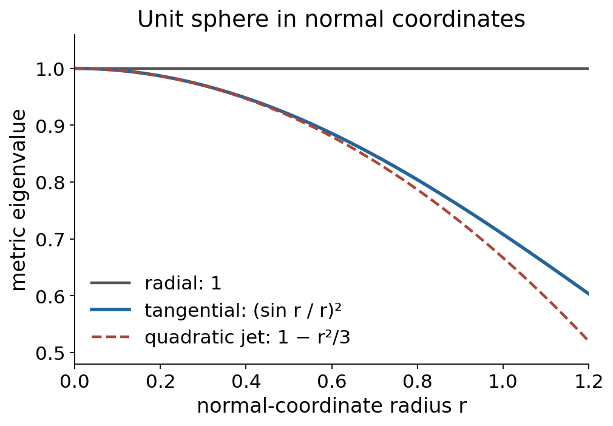
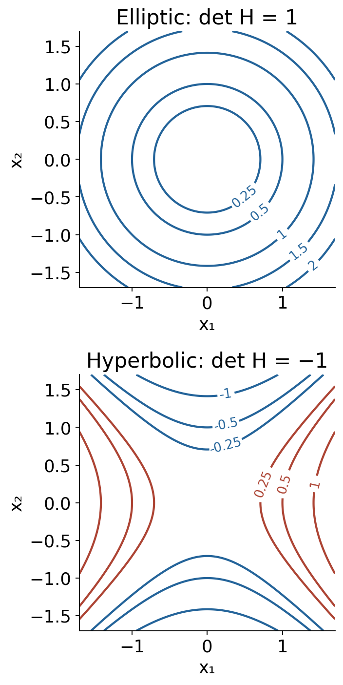

The formal calculus of variations and differential invariants
Written by GPT-6.1 Sol (OpenAI) in Codex at Ultra, October 2026. Public domain (CC0).
A boundary term changes an action without changing its equations. An invariant action can therefore be studied through its Euler expressions, whose transformation law is more rigid than that of a chosen density. For a metric, the same principle of discarding coordinate choices leads to normal coordinates: its derivatives at a point can be replaced by curvature and its covariant derivatives.
This lesson connects those three ideas. We use the first-variation identity, smooth metrics and their Levi-Civita connections, and the jet transformation rule in Prolongation, differential invariants and the projective group (Lie’s theory of transformation groups). Basic references are Noether's papers Invariants of arbitrary differential expressions, Formal calculus of variations and differential invariants, and Algebraic and differential invariants, together with Compère's Appendix A. Their subject matter is connected here by explicit homotopies and normal-coordinate calculations. Section 6 proves differential generation on a nonempty open domain of metric jets and explains why separating real orbits is a distinct question.
1. When the equations vanish before any variation
A null Lagrangian has $E_\alpha(L)=0$ identically on unrestricted jets. This is much stronger than saying that a particular graph solves its equations.
Theorem 1.1 (local null-Lagrangian theorem). Let $L$ be a smooth finite-order density on the full jet bundle of $X\times U$, where $U\subset\mathbb R^q$ is star-shaped about $c$. On each small base coordinate ball, $E(L)=0$ identically if and only if $L=D_iP^i$ for a smooth finite-order differential current $P$. More generally the conclusion holds on any jet domain on which the full homotopy to the jets of a reference section is defined.
Proof. Translate $u$ by $c$, so the centre is $0$. Differentiating along the ray of all jet coordinates gives
$$ L(x,u^{(k)})-L(x,0) =\int_0^1\sum_{\alpha,J}u^\alpha_J L_{u^\alpha_J}(x,\lambda u^{(k)})\,d\lambda. \tag{1.1} $$Apply first variation with field jets $w=\lambda u$ and test variation $h=u$. Its product-rule proof allows $h$ to be an independent test field; it does not require dividing by $\lambda$. Thus the integrand is
$$ u^\alpha E_\alpha(L)(x,\lambda u^{(2k)}) +D_iP_\lambda^i[u]. $$Here $P_\lambda$ is the explicit boundary formula of the preceding lesson, with coefficients evaluated at $\lambda u$ and test derivatives $D_Jh=u_J$. Total differentiation commutes with that evaluation. If $E(L)=0$, (1.1) is a divergence.
The remaining function $f(x)=L(x,0)$ also has a local primitive. With the base ball centred at $0$, define
$$ P_0^i(x)=x^i\int_0^1 t^{n-1}f(tx)\,dt. $$Its divergence is the integral of $d[t^n f(tx)]/dt$, equal to $f(x)$. Hence $P=P_0+\int_0^1P_\lambda\,d\lambda$ works. Every expression has finite jet order and is smooth, including at $\lambda=0$. The reverse implication is Proposition 2.1 of the preceding lesson. $\square$
Star-shaped values suffice on a full jet bundle, because all derivative coordinates are unrestricted. They do not suffice on an arbitrary jet subdomain that fails to contain the scaled derivative jets. The base conclusion is local; global topology has not been discarded.
For example, on two independent variables,
$$ u_{xx}u_{yy}-u_{xy}^2 =D_x(u_xu_{yy})-D_y(u_xu_{xy}). \tag{1.2} $$The third-derivative terms cancel by equality of mixed derivatives. This second-order null Lagrangian illustrates why a divergence can have lower order than its individual boundary derivatives suggest.
A closed one-form that has no single-valued primitive
On $U=\mathbb R^2\setminus\{0\}$, with fields $(u,v)$ and independent variable $x$, consider
$$ L=\frac{u v_x-v u_x}{u^2+v^2} =a(u,v)u_x+b(u,v)v_x, \quad a=-\frac{v}{u^2+v^2},\quad b=\frac{u}{u^2+v^2}. \tag{1.3} $$Its Euler expressions are $E_u=(b_u-a_v)v_x$ and $E_v=(a_v-b_u)u_x$, both zero since $b_u=a_v=(v^2-u^2)/(u^2+v^2)^2$. Locally $L=D_x\arg(u+iv)$.
It is not the derivative of any globally single-valued finite-order differential function. If $D_xF=L$ and $F$ has order $r\ge1$, the coefficients of the unrestricted highest derivatives $u^{(r+1)},v^{(r+1)}$ force $F_{u^{(r)}}=F_{v^{(r)}}=0$. Descend to $F=F(x,u,v)$. Comparison of the remaining coefficients gives $F_x=0$, $F_u=a$, $F_v=b$. But on the loop $(u,v)=(\cos\theta,\sin\theta)$, $\int(a\,du+b\,dv)=2\pi$, whereas a single-valued exact differential integrates to zero. The fibre is not contractible or star-shaped, and the obstruction persists even if the independent-variable interval is small.
2. The exact transformation law of the Euler expressions
Let an invertible point transformation be
$$ y^a=Y^a(x,u),\qquad v^\beta=V^\beta(x,u). $$It need not preserve the projection to the independent variables. Along a graph define
$$ A^a{}_i=D_iY^a,\qquad v^\beta_a=(A^{-1})^i{}_aD_iV^\beta. $$We restrict to the graph-transverse domain $\det A\ne0$. Use oriented densities and $\det A>0$ for the integral interpretation; for unsigned integration densities replace it by $|\det A|$. Suppose
$$ L(x,u^{(k)})=\det A\;\widetilde L(y,v^{(k)}). \tag{2.1} $$The right side includes the prolonged transformation. Set
$$ M^\beta{}_\alpha =V^\beta_{u^\alpha}-v^\beta_aY^a_{u^\alpha}. \tag{2.2} $$These are ordinary point partial derivatives of $V,Y$, followed by substitution of the transformed graph derivative. No additional derivative of the expression $V-v_aY$ is intended.
Theorem 2.1 (Euler covariance). On that domain,
$$ E_\alpha(L) =\det A\;M^\beta{}_\alpha \left(E_\beta(\widetilde L)\circ j^\infty(Y,V)\right). \tag{2.3} $$Proof. Vary the original graph vertically by $h$, holding $x$ fixed. A point of the varied graph moves by $\delta y=Y_u h$, $\delta v=V_u h$. At fixed new base coordinate $y$, its vertical variation is the characteristic $\widetilde h=\delta v-v_a\delta y^a=Mh$. First variation in the new chart consists of the Euler term $E_\beta(\widetilde L)\widetilde h^\beta$ plus a divergence and the base-volume boundary contribution. For compactly supported $h$, every boundary term vanishes. Changing variables by (2.1) gives
$$ \int E_\alpha(L)h^\alpha\,d^nx =\int \det A\,E_\beta(\widetilde L)M^\beta{}_\alpha h^\alpha\,d^nx. $$The fundamental lemma gives (2.3) along every graph; realization of finite jets gives the identity. The dependence of $M$ on first derivatives does not introduce derivatives of $h$: it is the fixed-$y$ characteristic, not the variation at moving coordinates. $\square$
The matrix $M$ is invertible. In the source tangent basis consisting of the graph-horizontal vectors $\partial_{x^i}+u_i^\alpha\partial_{u^\alpha}$ and the vertical vectors, the point Jacobian has block form $\left(\begin{smallmatrix}A&Y_u\\DV&V_u\end{smallmatrix}\right)$. Its determinant is $\det A\det(V_u-DV A^{-1}Y_u)=\det A\det M$. Both the full point map and $A$ are invertible, so $\det M\ne0$. Thus the Euler equations transform equivalently.
When an action is invariant under a point group, (2.3) is its relative differential-invariant law: the Euler expressions transform as the dual vertical characteristic, with the density Jacobian. They are not automatically scalar invariants. A boundary change of the density does not change them, by the null-Lagrangian result.
For a fibre change $v=f(u)$ and $y=x$, this reduces to $E_u(L)=f'(u)E_v(\widetilde L)$. For interchange $y=u$, $v=x$ on a one-dimensional graph with $u_x>0$, $A=u_x$, $M=-1/u_x$, so the weight $\det A\,M$ is $-1$. These examples check both the base factor and the characteristic factor.
3. Curvature from variation of a curve
For a plane graph $\gamma(x)=(x,u(x))$ oriented by increasing $x$, let $w=\sqrt{1+u_x^2}$, $ds=w\,dx$, $T=(1,u_x)/w$ and $N=(-u_x,1)/w$. Define signed curvature by $D_sT=\kappa N$, giving
$$ \kappa=\frac{u_{xx}}{w^3}. $$The Euler expression of arc length is
$$ E(w)=-D_x\left(\frac{u_x}{w}\right) =-\frac{u_{xx}}{w^3}=-\kappa. \tag{3.1} $$The action is Euclidean invariant; its Euler expression is the normal geometric curvature, with the relative law (2.3). Reflections or reversing the curve orientation change the signed convention; curvature squared and the curvature vector have the corresponding invariant interpretations.
For the bending functional,
$$ \int \kappa^2\,ds=\int \frac{u_{xx}^2}{(1+u_x^2)^{5/2}}\,dx, $$the exact graph Euler expression is
$$ E\left(\frac{u_{xx}^2}{w^5}\right)=2\kappa_{ss}+\kappa^3. \tag{3.2} $$There is no residual power of $w$ with these choices of dependent variation and signed normal. We prove that factor geometrically.
Parametrize the original curve by arclength and make a compactly supported normal variation $\delta\gamma=fN$. Then $D_s\delta\gamma=f_sN-\kappa fT$, so $\delta ds=-\kappa f\,ds$, $\delta D_s=\kappa fD_s$, $\delta T=f_sN$, and $\delta N=-f_sT$. Differentiating $\kappa=\langle D_sT,N\rangle$ gives $\delta\kappa=f_{ss}+\kappa^2f$. Hence
$$ \delta\int\kappa^2ds =\int(2\kappa f_{ss}+\kappa^3f)\,ds =\int(2\kappa_{ss}+\kappa^3)f\,ds. $$For a vertical graph variation $(0,h)$, its normal component is $f=h/w$, and $f\,ds=h\,dx$. The tangential component is a reparametrization and contributes only an endpoint term: for velocity $\tau T$, its variation of $\kappa^2ds$ is $D_s(\tau\kappa^2)ds$. This proves (3.2) by the fundamental lemma. The stationary unconstrained bending curves satisfy $2\kappa_{ss}+\kappa^3=0$; imposing length or area constraints changes that equation.
4. Replacing metric derivatives by curvature
For a positive-definite metric, choose $p$ and an orthonormal basis $(e_i)$ of $T_pM$. The normal-coordinate map is $x\mapsto\exp_p(x^ie_i)$ on a neighbourhood of $0$. The curvature convention is that of the preceding lesson:
$$ R(X,Y)Z=\nabla_X\nabla_YZ-\nabla_Y\nabla_XZ-\nabla_{[X,Y]}Z. $$In this section define components specifically by
$$ R_{ikjl}=\langle R(e_i,e_k)e_l,e_j\rangle. \tag{4.1} $$Thus the unit sphere has $R_{ikjl}=\delta_{ij}\delta_{kl}-\delta_{il}\delta_{kj}$. This fixes the sign in the expansion below.
The curvature symmetries needed in the proof can be established at this point. Write $A(a,b,c,d)=\langle R(a,b)c,d\rangle$. The definition makes it skew in $a,b$. Applying the covariant-derivative commutator to $\langle c,d\rangle$ gives $A(a,b,c,d)=-A(a,b,d,c)$, since $\nabla g=0$. For the cyclic identity, the radial geodesic equation in normal coordinates gives $\Gamma^k_{ij}(p)v^iv^j=0$ for every $v$; torsion-freeness then gives $\Gamma(p)=0$. At $p$ the curvature is the difference of two first derivatives of $\Gamma$. Their cyclic sum cancels because $\Gamma^k_{ij}=\Gamma^k_{ji}$, proving $A(a,b,c,d)+A(b,c,a,d)+A(c,a,b,d)=0$. These three identities give the pair exchange. Indeed the cyclic identity followed by skewness in the last pair gives $A(a,b,c,d)=A(b,c,d,a)+A(c,a,d,b)$. Applying the cyclic identity to these two terms gives $2A(c,d,a,b)-A(d,b,c,a)-A(a,d,c,b)$. The last two terms together equal $-A(a,b,c,d)$, by last-pair skewness and the cyclic identity for $(d,b,a)$ with fourth argument $c$. Hence $A(a,b,c,d)=A(c,d,a,b)$. In particular the Jacobi operator $z\mapsto R(z,x)x$ is self-adjoint.
Theorem 4.1 (normal-coordinate Taylor coefficients). In these coordinates,
$$ g_{ij}(x)=\delta_{ij}-\tfrac13R_{ikjl}(p)x^kx^l+O(|x|^3). \tag{4.2} $$For every $r\ge2$, its Taylor coefficient of degree $r$ is a universal polynomial in the components of $R,\nabla R,\ldots,\nabla^{r-2}R$ at $p$, using contractions with $\delta$. Conversely those curvature derivative components through order $r-2$ are polynomial functions of the normal-coordinate metric jet through order $r$. These are statements about finite jets of smooth metrics, not convergence of a Taylor series.
Proof. Fix a small vector $x\in T_pM$ and the radial geodesic $\gamma_x(t)=\exp_p(tx)$. Vary its initial velocity by $e_i$; the variation field is $J_i(t)$, with $J_i(0)=0$ and $\nabla_tJ_i(0)=e_i$. At $t=1$, it is the normal-coordinate vector $\partial_{x^i}$.
The geodesic variation has commuting coordinate fields $T=\partial_t$ and $J=\partial_\varepsilon$. Torsion-freeness gives $\nabla_TJ=\nabla_JT$. The curvature definition and $\nabla_TT=0$ imply $\nabla_T^2J=R(T,J)T=-R(J,T)T$. Thus $J$ satisfies the Jacobi equation $\nabla_t^2J+R(J,T)T=0$.
Parallel transport to $p$ is an isometry. Put $Y_i(t)=\operatorname{PT}_t^{-1}J_i(t)$ and
$$ \mathcal A_x(t)z=\operatorname{PT}_t^{-1} R_{\gamma_x(t)}(\operatorname{PT}_t z,\operatorname{PT}_t x) \operatorname{PT}_t x. $$The Jacobi initial-value problem is exactly the integral equation
$$ Y_i(t)=t e_i-\int_0^t(t-s)\mathcal A_x(s)Y_i(s)\,ds. \tag{4.3} $$The covariant Taylor formula along a geodesic with parallel frame gives, to any finite required degree,
$$ \mathcal A_x(s)z =\sum_{m=0}^{N}\frac{s^m}{m!}(\nabla_x^mR)_p(z,x)x +O(|x|^{N+3}). \tag{4.4} $$Here $N$ is any fixed nonnegative integer. The term indexed by $m$ has degree $m+2$ in $x$, and the remainder is uniform for $0\le s\le1$ on a sufficiently small normal-coordinate ball. Taylor's theorem justifies (4.4); no analyticity is needed. Write $Y_{i,r}$ for its homogeneous degree-$r$ coefficient in $x$. Then $Y_{i,0}=te_i$, $Y_{i,1}=0$, and for $r\ge2$,
$$ Y_{i,r}(t)=- \sum_{m+2+a=r}\int_0^t (t-s)\frac{s^m}{m!} (\nabla_x^mR)_p(Y_{i,a}(s),x)x\,ds. \tag{4.5} $$This finite recurrence proves inductively that $Y_{i,r}(1)$ is a universal polynomial of the asserted curvature order. Each integration is of a polynomial in $s$, so its coefficients are universal rational numbers.
The leading correction is $Y_i(1)=e_i-\tfrac16R_p(e_i,x)x+O(|x|^3)$. Consequently
$$ g_{ij}(x)=\langle Y_i(1),Y_j(1)\rangle =\delta_{ij}-\tfrac16\bigl(\langle R(e_i,x)x,e_j\rangle+ \langle e_i,R(e_j,x)x\rangle\bigr)+O(|x|^3). $$The curvature symmetries just proved make the two displayed contractions equal, yielding (4.2). In particular $g(0)=\delta$ and its first derivatives vanish.
For the converse, the coordinate formulas for $\Gamma$ and $R$ express them through $g^{-1}$ and derivatives of $g$ through order two. Each covariant derivative adds one differentiation and connection terms. At $0$, $g^{-1}=\delta$ and $\partial g=0$; derivatives of the inverse follow recursively by differentiating $g^{-1}g=1$. Therefore all curvature derivatives through order $r-2$ are polynomials in the metric derivatives through order $r$. This proves both directions. $\square$
The recurrence determines finite jets. It does not say that smooth metrics with all the same curvature derivatives at a point agree in a neighbourhood: a smooth perturbation flat to every order at that point is not detected by its Taylor jet.

Figure 4.1. On the unit two-sphere, the Jacobi equation gives radial metric eigenvalue $1$ and tangential eigenvalue $(\sin r/r)^2$ on $0\le r<\pi$, with value $1$ at $r=0$. Solution 7.5 derives both. The dashed curve is the quadratic Taylor polynomial $1-r^2/3$ from (4.2), an approximation near zero; the plot shows $0\le r\le1.2$. Positive curvature reduces tangential lengths relative to the Euclidean normal-coordinate radius. The eigenvalues multiply squared coordinate lengths. Original computed figure, CC0. Editable vector figure; the figure source reproduces it.
The reduction theorem
A scalar differential invariant of metric order $r$ is a function of a positive-definite metric and its coordinate derivatives through order $r$ at a point that is unchanged by all local coordinate diffeomorphisms.
Theorem 4.2 (Riemannian reduction). For $r\ge2$, every such invariant is a function on the orthogonal-group orbit space of the tuple
$$ (R,\nabla R,\ldots,\nabla^{r-2}R)_p. \tag{4.6} $$For $r=0,1$, all scalar differential invariants are constant on the full space of metric jets. Polynomial scalar invariants in a normal orthonormal frame are polynomials in complete contractions of the tensors in (4.6).
Proof. Normalize the metric jet by the exponential coordinates. Coordinate invariance does not change its value. Theorem 4.1 gives a universal map from (4.6) to that normalized jet, so the value depends only on (4.6). Changing the chosen orthonormal frame applies an element of $O(n)$ to every tensor in the tuple. All such frame changes are coordinate changes, so the resulting function is constant on orthogonal orbits. Conversely, the curvature tuple of a metric transforms tensorially under coordinate changes; any function of its orthogonal orbit is a scalar differential invariant on the realized tuple domain. For $r\le1$, the normal metric jet is always $(\delta,0)$, proving the constant assertion. The contraction statement follows from the orthogonal invariant theorem proved in §5. $\square$
For a general smooth invariant, “function on the orbit space” means equality of values on orbits. It does not assert a smooth extension to all of a Euclidean space of polynomial generators. Curvature tuples are subject to their curvature symmetries and differential identities; we do not treat them as independent arbitrary arrays.
For surfaces, the tensor at order two is $R_{ikjl}=K(\delta_{ij}\delta_{kl}-\delta_{il}\delta_{kj})$, so every scalar invariant through order two is a function of Gaussian curvature $K$. To verify this directly, the curvature pair symmetries make the tensor a symmetric bilinear form on $\Lambda^2T_pM$, which is one-dimensional; its unique component is the sectional curvature.
In dimension three, a curvature tensor is determined by Ricci:
$$ R_{ikjl} =\operatorname{Ric}_{ij}\delta_{kl}+\operatorname{Ric}_{kl}\delta_{ij} -\operatorname{Ric}_{il}\delta_{kj}-\operatorname{Ric}_{kj}\delta_{il} -\tfrac{\mathrm{Scal}}2(\delta_{ij}\delta_{kl}-\delta_{il}\delta_{kj}). \tag{4.7} $$The right side has the curvature symmetries and its Ricci contraction is the prescribed tensor. Its difference from $R$ has zero Ricci. In an orthonormal basis, the diagonal Ricci entries are the sums of the three sectional curvatures in pairs, forcing those components to vanish; off-diagonal Ricci determines the remaining three off-diagonal entries of the symmetric form on $\Lambda^2$. The difference is therefore zero. This proves (4.7). Orthogonal diagonalization of the symmetric Ricci matrix then shows that order-two scalar invariants are symmetric functions of its three eigenvalues. Polynomial ones are generated by the elementary symmetric functions, equivalently by $\mathrm{Scal}$, $\operatorname{tr}(\operatorname{Ric}^2)$ and $\operatorname{tr}(\operatorname{Ric}^3)$, via Newton's identities.
The polynomial assertion has a short algebraic proof. In lexicographic order a leading monomial of a symmetric polynomial in $\lambda_1,\lambda_2,\lambda_3$ has exponents $a_1\ge a_2\ge a_3$, because otherwise permuting two variables produces a larger monomial. The product $e_1^{a_1-a_2}e_2^{a_2-a_3}e_3^{a_3}$ has exactly that leading monomial. Subtract its appropriate multiple and repeat within the finite set of monomials of bounded degree. This proves generation by the elementary symmetric polynomials. Expanding the products gives $e_1=p_1$, $e_2=(p_1^2-p_2)/2$ and $e_3=(p_1^3-3p_1p_2+2p_3)/6$, where $p_j=\sum_i\lambda_i^j$.
5. Why contractions describe orthogonal invariants
Let $V=\mathbb R^n$ with its Euclidean inner product. A complete contraction pairs every tensor index with another using that inner product, leaving a scalar. For example $R_{ikjl}R_{ikjl}$ is the squared norm of curvature in an orthonormal frame, and $\nabla_aR_{ikjl}\nabla_aR_{ikjl}$ is the squared norm of its first derivative.
Theorem 5.1 (orthogonal invariant tensors). Every $O(n)$-invariant tensor in $V^{\otimes d}$ is a linear combination of pairings of its $d$ slots by the metric. For odd $d$ it is zero. Consequently invariant polynomials on any finite direct sum of tensor spaces, or on an invariant linear subspace of that sum, are polynomials in complete contractions.
Proof. We first compute moments of a uniform unit vector in a Euclidean space of dimension $a\ge1$. Let $Z$ be a vector of independent standard real Gaussians. Its moment-generating function is $\exp(\tfrac12|t|^2)$, obtained by completing the square in the Gaussian integral. Differentiating that function at $0$ shows that each even moment is the sum over all pairings of indices of the products of Kronecker deltas; odd moments are zero. Write $Z=\rho U$ in polar coordinates. The direction $U$ is uniform on the sphere, independent of $\rho$, since the Gaussian density depends only on radius. Integration by parts in the radial integral gives $\mathbb E\rho^{2k}=a(a+2)\cdots(a+2k-2)$. Thus
$$ \mathbb E(U_{i_1}\cdots U_{i_{2k}}) =\frac{\sum_{\text{pairings}}\prod \delta_{i_\ell i_{\ell'}}} {a(a+2)\cdots(a+2k-2)}. \tag{5.1} $$The same formula in a subspace uses its orthogonal projector $P_{ij}$ in place of $\delta_{ij}$. This includes dimension one, where the sphere consists of two points.
Construct a random orthonormal frame sequentially: its first vector is uniform on the unit sphere, its second uniform in the orthogonal complement, and so on. The last vector has the two equally likely signs. Orthogonal transformations preserve this construction, so its matrix $O$ has an invariant distribution. Averaging $O^{\otimes d}T$ therefore projects any tensor $T$ onto invariant tensors; if $T$ is invariant the average is $T$ itself.
For polynomials on a tensor representation, use $\mathcal R(p)(z)=\mathbb E[p(O^{-1}z)]$. Left invariance of the frame distribution gives $\mathcal R(p)(hz)=\mathcal R(p)(z)$ for $h\in O(n)$, by replacing $O$ with $hO$. This averaging fixes invariant polynomials and satisfies $\mathcal R(pI)=\mathcal R(p)I$ when $I$ is invariant.
Expand $T$ in coordinate basis tensors. Its average has components which are moments of entries of the columns of $O$. Integrate the last column first, conditional on the preceding columns. Formula (5.1) pairs its row indices by $P=I-\sum_{\ell<n}U_\ell\otimes U_\ell$. Expand these projector products into deltas and products of preceding-column entries. Repeat with the preceding columns. At every step the number of columns to integrate drops, and after the first column only pairings by $\delta$ remain. Thus the averaged tensor lies in the span of metric pairings. Odd tensor degree gives zero also directly from the action of $-I$.
Decompose a polynomial by degree in each tensor summand; the orthogonal action preserves this decomposition. Polarization identifies each such component with a multilinear form on its tensor variables. That form is a tensor in some $V^{\otimes d}$, after identifying dual slots with $V$ by the metric. Its invariance and the preceding result express it as a sum of complete contractions. Invariant polynomials on an invariant subspace extend to the ambient space by composing with the orthogonal projection onto the subspace, which commutes with $O(n)$. Summing the components finishes the proof. $\square$
For a fixed finite curvature tuple the polynomial invariant ring is finitely generated. Here is the finiteness argument. The polynomial ring in the tensor coordinates is Noetherian by the Hilbert basis theorem, proved in Noetherian and Artinian rings, Theorem 2.1 (Commutative algebra for geometry). The ideal generated by all positive-degree homogeneous invariant polynomials therefore has a finite generating subset $I_1,\ldots,I_s$ consisting of such invariants. Average any expression $I=\sum a_jI_j$ over the orthogonal group. Averaging, defined by the invariant frame distribution above, preserves polynomial degree and satisfies $\mathcal R(a_jI_j)=\mathcal R(a_j)I_j$. For homogeneous $I$, the coefficients can be taken homogeneous of degree $\deg I-\deg I_j$, strictly smaller than $\deg I$. Induction on degree expresses every invariant polynomial in $I_1,\ldots,I_s$. The proof uses algebraic ideal finiteness and an averaging projection, rather than a bound on the number of components of a tensor.
Contractions also separate distinct orthogonal orbits of a finite tensor tuple. Indeed the orbits are compact and disjoint. A continuous function taking different constant values on them can be approximated uniformly by a polynomial on their union. For an explicit approximation, enclose them in a compact cube, extend the continuous distance-based separating function there, and use multivariable Bernstein polynomials, whose uniform convergence follows from uniform continuity and the variance bound for independent binomial variables. Averaging the approximating polynomial produces an invariant polynomial still separating the two orbits. Theorem 5.1 expresses it by contractions. Hence knowing all contractions determines the orbit. This does not identify a smooth invariant with a polynomial; it identifies the data on which its value depends.
To spell out that approximation, for disjoint compact orbits $A,B$ take $f(z)=d(z,A)/(d(z,A)+d(z,B))$, equal to $0$ on $A$ and $1$ on $B$. After rescaling a containing cube to $[0,1]^d$, its Bernstein polynomial is $\mathbb E f(X_1/N,\ldots,X_d/N)$ with independent $X_i\sim\operatorname{Bin}(N,z_i)$. This expectation is a polynomial by the binomial formula. Uniform continuity bounds the error by $\varepsilon$ on $|X/N-z|<\delta$; outside that event Chebyshev's inequality bounds its contribution by $2\|f\|_\infty d/(4N\delta^2)$, since $\sum_i\operatorname{Var}(X_i/N)\le d/(4N)$. The error tends to zero uniformly. Choose it smaller than $1/3$, then average; the two orbit values remain separated.
For curvature tuples subject to further, possibly nonlinear, identities, a polynomial invariant means the restriction of an ambient polynomial. Average that polynomial over $O(n)$. The restriction is unchanged because the realized set is invariant, and the averaged polynomial is an ambient invariant. Thus the contraction assertion also applies to polynomial invariants on realized curvature-jet sets.
6. Differential generation and rational quotients
Fixed-order polynomial finiteness and generation at every differential order are different assertions. The first follows from the orthogonal contraction theorem and Hilbert's basis theorem in §5. The second requires derivatives of a fixed collection of invariants. We prove it here on an explicit open set of metric jets.
Intrinsic coordinates and invariant derivatives
Let $I^1,\ldots,I^n$ be scalar differential invariants of a positive-definite metric. Assume the horizontal derivative matrix $A^a{}_i=D_iI^a$ is invertible. Put
$$ e_a=(A^{-1})^i{}_aD_i,\qquad h_{ab}=g_{ij}(A^{-1})^i{}_a(A^{-1})^j{}_b. \tag{6.1} $$The $e_a$ are total-derivative operators. On each metric satisfying the rank condition, they are coordinate differentiation with respect to $y^a=I^a$. The matrix $h$ is the metric in these intrinsic coordinates.
For any scalar invariant $F$,
$$ d_HF=(e_aF)d_HI^a. $$Pullback under a coordinate change preserves both horizontal differentials. Their independence therefore makes each coefficient $e_aF$ invariant. The $h_{ab}$ are also invariant, as evaluations of the metric on the intrinsic frame. Finally $[e_a,e_b]=0$: their commutator is horizontal and kills all $I^c$, since $e_aI^c=\delta_a^c$; an invertible $A$ forces its coefficients to vanish. These assertions are identities on the rank domain, not only on a chosen solution of an equation.
The inverse in (6.1) divides by $\det A$. If the $I^a$ are rational differential invariants, both the frame and its derivative operators have rational coefficients of bounded jet order. The rank condition is essential.
A rational choice exists on a nonempty open set
For $n\ge3$, take
$$ I^a=\operatorname{tr}\bigl((\operatorname{Ric}^{\sharp})^a\bigr), \qquad 1\le a\le n, \tag{6.2} $$where $\operatorname{Ric}^{\sharp}$ raises one Ricci index by $g^{-1}$. These are rational in metric jets through order two; their horizontal gradients have order three. Let $\Omega$ be the domain on which their gradients are independent. We now prove that it is nonempty.
Use a conformal metric $g=e^{2f}\sum_i(dx^i)^2$ near $0$, with $f(0)=0$ and $df(0)=0$. The connection formula is
$$ \Gamma^k_{ij}=\delta_i^k f_j+\delta_j^k f_i-\delta_{ij}f_k. $$Substitution in the Ricci formula gives
$$ \operatorname{Ric}_{ij} =-(n-2)(f_{ij}-f_if_j) -\bigl(\Delta f+(n-2)|df|^2\bigr)\delta_{ij}. \tag{6.3} $$One can check the contraction directly: the derivative terms are $-(n-2)f_{ij}-\delta_{ij}\Delta f$; the two quadratic connection products contribute $(n-2)(f_if_j-|df|^2\delta_{ij})$. Thus at $0$, diagonal Hessian entries $f_{jj}$ give Ricci eigenvalues
$$ \lambda_j=-(n-2)f_{jj}-\sum_b f_{bb}. $$The linear map from these Hessian entries to $\lambda$ has eigenvalues $-(n-2)$ on the sum-zero subspace and $-(2n-2)$ on the constant subspace. It is invertible for $n\ge3$. Choose distinct real $\lambda_j$.
For each $i$, the third derivatives $f_{ijj}$ can be chosen to satisfy $\partial_i\operatorname{Ric}_{jj}(0)=\delta_{ij}$, using the same invertible linear map. These choices are compatible with symmetry of third derivatives: the multi-index with entries $(i,j,j)$ for $i\ne j$ occurs in only that row; the entries $(j,i,i)$ are different multi-indices. Set unused third derivatives to zero. A polynomial $f$ realizes these prescribed finite derivatives. Since $dg(0)=0$, differentiating (6.2) at this diagonal Ricci matrix gives
$$ D_iI^a(0)=a\lambda_i^{\,a-1}. $$Its determinant is a nonzero constant multiple of the Vandermonde product $\prod_{i<j}(\lambda_j-\lambda_i)$. This proves $\Omega\ne\varnothing$. After clearing powers of $\det g$, the determinant in question is polynomial in finite metric jets. Consequently its nonvanishing is a Zariski-open condition inside the positive-definite jet domain.
For $n=2$, let $K$ be Gaussian curvature and use
$$ I^1=K,\qquad I^2=|dK|_g^2. \tag{6.4} $$Their gradients have order at most four. Here too the independence domain is nonempty. For the conformal metric with $f=-x^3/6-x^3y/6$, formula (6.3) gives $K=e^{-2f}(x+xy)$. At $0$, $dK=dx$, $K_{xy}=1$ and $K_{xx}=0$. Since $dg(0)=0$, $d|dK|_g^2=2\,dy$. Hence the two gradients are independent. The same clearing of denominators gives a Zariski-open condition in the fourth metric jets.
No assertion is made that every metric belongs to this particular open set. Constant-curvature metrics, for example, do not have these intrinsic coordinates. We will state the finiteness result on $\Omega$.
The finite generating collection
Put $\ell=3$ when $n\ge3$, and $\ell=4$ when $n=2$. In addition to $I^a$ and $h_{ab}$, take all components in the intrinsic frame of
$$ R,\nabla R,\ldots,\nabla^{\ell-2}R. \tag{6.5} $$Use the covariant $(0,4)$ curvature tensor, and regard each covariant derivative as supplying another covariant slot. Denote these components by $T_{m,b_1\ldots b_{m+4}}$, $0\le m\le\ell-2$. They are scalar differential invariants: under a coordinate change both tensor and intrinsic frame transform, and their evaluation is unchanged. Their metric order is at most $\ell$, since the frame has that order and the tensors use derivatives through order $m+2$. There are finitely many such components.
Theorem 6.1 (differential generation on the metric rank domain). On $\Omega$, every scalar coordinate invariant which is rational in the metric jets through order $\ell$ and polynomial in higher metric jets is a polynomial in iterated $e_a$-derivatives of the finite collection (6.2) or (6.4), $h_{ab}$ and (6.5), with coefficients rational in that finite collection. All inverses are taken where their denominators are nonzero. These generated invariants determine the coordinate-equivalence class of every finite metric jet. They do not assert an isometry of smooth metric germs merely from equality of all Taylor invariants.
Proof. We need two steps: express an arbitrary invariant by tensor components, then generate the higher components by differentiation.
First normalize the metric at the point by geodesic normal coordinates and an orthonormal frame. The finite Jacobi recurrence in §4 expresses each normal-coordinate metric coefficient polynomially in curvature derivatives. Thus an invariant $F$ of order $k$ becomes a rational function of the curvature tuple through order $k-2$. If $F$ is polynomial in metric derivatives of order greater than $\ell$, its expression is polynomial in the curvature derivatives of order greater than $\ell-2$, with rational coefficients in the lower tuple. This follows directly from the triangular order bound in Theorem 4.1: a normal metric coefficient of degree $r$ uses no curvature derivative above $r-2$. Write this expression as $p/q$, with $p$ polynomial in the full tuple and $q$ polynomial in the lower tuple. Both are ordinary finite-dimensional polynomials at this fixed order.
It is useful to make the denominator orthogonally invariant. Let $\mathcal R$ be the averaging projection of §5. Since $F$ is invariant, the rational identity $p=Fq$ implies
$$ \mathcal R(pq)=F\,\mathcal R(q^2). \tag{6.6} $$The average $\mathcal R(q^2)$ is an invariant polynomial in the lower tuple. At any real point where $q\ne0$, it is positive: the value at the identity is positive, continuity gives positivity on a group neighbourhood, and the invariant frame distribution gives that neighbourhood positive measure. The latter fact follows also directly from its sequential sphere construction: small open sets of frames have positive probability. Hence (6.6) supplies an invariant denominator without changing the order or introducing a higher-jet denominator. Polynomial identities justify the averaging equality even if an individual expression for $F$ has poles at some other frame representatives.
Theorem 5.1 writes both invariant polynomials in (6.6) as finite sums of complete contractions. Evaluate each contraction in the intrinsic frame. Contracting two covariant indices uses $h^{ab}$, the inverse of $h$. Each $h^{ab}$ is rational in the finitely many entries $h_{ab}$. We have therefore expressed $F$ as a polynomial in all intrinsic components of the higher curvature derivatives, with coefficients rational in $h$ and the lower components in (6.5). Its particular lower denominator is allowed wherever it is nonzero. This proves the required algebraic reduction without confusing an arbitrary smooth invariant with a rational one.
For the second step, the intrinsic frame commutes, so the connection coefficients in it are
$$ \Gamma^c_{ab} =\frac12h^{cd} \bigl(e_ah_{bd}+e_bh_{ad}-e_dh_{ab}\bigr). \tag{6.7} $$This follows from metric compatibility and torsion-freeness by the same three-equation addition used for the Levi-Civita formula. For a covariant tensor $T$ with $r$ slots,
$$ (\nabla T)_{a b_1\ldots b_r} =e_a(T_{b_1\ldots b_r}) -\sum_{j=1}^r\Gamma^c_{a b_j} T_{b_1\ldots b_{j-1}c b_{j+1}\ldots b_r}. \tag{6.8} $$To verify (6.8), differentiate the scalar $T(e_{b_1},\ldots,e_{b_r})$ by the product rule, and subtract the $r$ terms obtained by differentiating its arguments. Repeatedly applying it to $R$ and its covariant derivatives produces every higher component from $R$, $h$ and their invariant derivatives. At every step, (6.7) has only the denominator $\det h$. Differentiating a rational coefficient already in the finite collection gives a polynomial in first derivatives of its generators with another rational coefficient in the same collection, by the quotient rule. Induction therefore keeps all higher components polynomial in iterated derivatives, with rational coefficients in the original finite collection.
Substitute these expressions in the contraction reduction from the first step. This gives precisely the claimed generation of $F$, with no appeal to an external finiteness theorem.
For the last assertion, all complete contractions of every finite curvature tuple belong to the stated rational-polynomial class. By §5, their values determine its orthogonal orbit. The normal-coordinate reconstruction of §4 then determines the finite metric jet up to coordinate change. If two metrics in $\Omega$ have the same values of every generated invariant, they have the same contractions at each finite order and therefore equivalent finite jets. This is a finite-jet statement; smooth functions flat to every order at a point show why it does not give an isometry of metric germs. $\square$
In dimension one, no rank construction is needed. Write the metric as $a(x)\,dx^2$, $a>0$, and set $y=\int_{x_0}^x\sqrt{a(s)}\,ds$. The derivative is positive, so this is a local coordinate and the metric becomes $dy^2$. Every scalar metric invariant is consequently constant.
Why a general real-orbit assertion needs care
The broader Lie–Tresse problem concerns algebraic pseudogroups and formally integrable algebraic equations, rather than just metrics. Its rational-polynomial function class is essential. There is also a distinction between geometric orbits after complexification and individual real orbits. The assertion that rational differential invariants always separate the latter, on a nonempty Zariski-open set, is false with only algebraicity, irreducibility, formal integrability and transitivity on the base.
Here is a complete counterexample. Let the real special-affine transformations of $(x,u)\in\mathbb R^2\times\mathbb R$ be
$$ y=Bx+b,\qquad v=c\,u+\lambda^Tx+d,\qquad B\in GL_2(\mathbb R),\quad c=(\det B)^{-1}. \tag{6.9} $$This is an algebraic group of affine transformations. Its linear part has block matrix $\left(\begin{smallmatrix}B&0\\ \lambda^T&c\end{smallmatrix}\right)$ of determinant one. Translations make it transitive on the three-dimensional point space. As a pseudogroup it is defined by the vanishing of second derivatives of the transformation and the indicated first-derivative constraints; its prolongations come from the same affine maps.
Take the equation
$$ u_{ijk}=0\qquad (1\le i,j,k\le2). \tag{6.10} $$Its solutions are the quadratic graphs. At every order at least two, an equation jet consists of $(x,u,u_i,H_{ij})$, where $H$ is symmetric; all derivatives of order three and higher are zero. These coordinates form an irreducible affine space. Every projection after the equation order has one-point affine fibres, and every compatible finite jet is realized by a quadratic polynomial. Thus formal integrability and algebraic irreducibility can be checked directly. Formula (6.9) preserves the equation.
The Hessian transforms by
$$ H'=c\,B^{-T}HB^{-1},\qquad \det H'=(\det B)^{-4}\det H. \tag{6.11} $$It follows that $\operatorname{sgn}\det H$ is constant on each nondegenerate real orbit. In particular the graphs $u=(x_1^2+x_2^2)/2$ and $u=(x_1^2-x_2^2)/2$ lie in different real orbits.
Nevertheless every rational differential invariant on this equation is constant. To prove this, complexify the coordinates and the same group. Any two nonsingular complex symmetric matrices $H_1,H_2$ are congruent: diagonalize their symmetric bilinear forms by successively selecting a vector of nonzero squared length, taking its orthogonal complement, and rescaling each nonzero diagonal entry by a complex square root. Thus there is a $B_0$ with $B_0^{-T}H_1B_0^{-1}=H_2$. If $d_0=\det B_0$, replace $B_0$ by $tB_0$, where $t^4=d_0^{-1}$. Then (6.11) sends $H_1$ exactly to $H_2$. Translations and the free row $\lambda^T$ independently adjust the base point, the value and the gradient. The complex group therefore has one orbit on the nonsingular equation jets.
An identity expressing invariance of a real rational function, after clearing denominators, is polynomial in the real group parameters and jet coordinates. A polynomial zero on a nonempty real open set is identically zero: fixing all but one variable reduces it to a one-variable polynomial, and induction handles the other variables. Hence the invariance identity holds also for the complexified action. The rational function is constant on its single dense complex orbit, and thus is constant as a rational function. Higher jets cannot add invariants, because (6.10) makes all of them zero.
Finally, every nonempty Zariski-open subset of the real equation jets meets both $\det H>0$ and $\det H<0$. Each sign domain contains a real Euclidean open set, on which a nonzero polynomial cannot vanish identically by the same argument. Removing a proper algebraic subset therefore cannot select just one sign domain. Constant rational invariants cannot distinguish the two real orbits there.

Figure 6.1. The exact functions $u_+=(x_1^2+x_2^2)/2$ and $u_-=(x_1^2-x_2^2)/2$ solve (6.10). Their Hessians have determinants $1$ and $-1$. Equation (6.11) preserves that sign under real transformations, although the rational invariant field on the quadratic-graph equation consists only of constants. The plotted contours are level sets of the displayed functions. Vector figure; figure source. Original computed illustration, CC0.

This example identifies a real-versus-geometric-orbit qualification; it does not contradict differential generation of the rational invariant algebra, which here has no nonconstant generators. For the metric action, positive definiteness makes the remaining orthogonal group compact, and §5 proves the orbit-separation assertion actually needed in Theorem 6.1. The general regular Cartan jet-action theorem is Theorem 4.45 of Prolongation, differential invariants and the projective group; Corollary 6.13 states its hypotheses and differential-generation conclusion here, including the single finite-level domain and geometric-orbit convention. Theorem 6.1 concerns metrics; Proposition 6.2 assumes a uniform horizontal span, and Example 6.3 establishes the rank-one action (6.16). Proposition 6.4 constructs a finite-level domain for horizontal rank in the stated regular jet-groupoid setting. Theorem 6.10 constructs the geometric quotient of one algebraic action, including its invariant field and regular functions.
Derivatives when the horizontal invariant rank is smaller
The intrinsic metric coordinates above use $n$ invariants with independent horizontal differentials. A general action can have fewer independent invariant directions. The appropriate object is then a quotient of the horizontal tangent space. The following construction states exactly which uniformity assumption it needs.
Let $E^\infty$ be the compatible prolongation of an invariant equation in a graph chart with $n$ independent variables. Its total derivatives $D_i$ commute and differentiate identities on the prolonged equation. Fix an integer $\ell\geq1$. Write $\mathscr R_\ell$ for the finite-order differential functions that are smooth in the base coordinates, rational in the fibre jet coordinates through order $\ell$, and polynomial in higher-order jet coordinates, restricted to domains where their denominators are nonzero. Let $\mathcal A=\mathscr R_\ell^G$ denote invariance under the full pseudogroup action, including every component. All identities below are on common domains of definition.
For an infinite equation jet $z$, its horizontal space $\mathcal H_z$ has basis $D_1,\ldots,D_n$. In the following definition use invariant functions defined on a neighborhood of $z$, so their derivatives can be evaluated there. Define its common invariant annihilator by
$$ \mathcal N_z=\bigcap_{F\in\mathcal A}\ker(d_HF)_z. \tag{6.12} $$Proposition 6.2 (derivatives on the horizontal quotient). Suppose a $G$-invariant domain $U\subset E^\infty$ is the full inverse image of a finite-level domain, and there are $I^1,\ldots,I^s\in\mathcal A$, each of order at most $\ell-1$, such that throughout $U$:
- The horizontal differentials $d_HI^1,\ldots,d_HI^s$ are independent.
- For every $F\in\mathcal A$, its horizontal differential belongs to their span, at every order where $F$ is defined.
Then $\mathcal H/\mathcal N$ has rank $s$. There are well-defined commuting derivations $\nabla_a:\mathcal A\to\mathcal A$, characterized by
$$ \begin{gathered} d_HF=\sum_{a=1}^s(\nabla_aF)d_HI^a,\\ \nabla_a I^b=\delta_a^b. \end{gathered} \tag{6.13} $$They have rational representatives in the fibre coordinates of order at most $\ell$. They preserve the rational-low-order/polynomial-higher-order function class, and increase order by at most one for input order at least $\ell$. The representatives can differ, but their actions on $\mathcal A$ agree. Every derivation of $\mathcal A$ induced by a horizontal field preserving $\mathcal A$ is uniquely $\sum_a J^a\nabla_a$, with $J^a\in\mathcal A$.
Proof. At a given point the second assumption and its converse for the $I^a$ show
$$ \mathcal N_z=\bigcap_{a=1}^s\ker(d_HI^a)_z. $$Consequently the map $[v]\mapsto(vI^1,\ldots,vI^s)$ is an isomorphism from $\mathcal H_z/\mathcal N_z$ to $\mathbf F^s$, where $\mathbf F=\mathbb R$ or $\mathbb C$: independence gives rank $s$, and the displayed intersection identifies its kernel. The inverse images of the coordinate basis are unique classes $[e_a]$.
Here is a finite-order formula for representatives. Choose columns $i_1,\ldots,i_s$ for which the matrix $C^a{}_b=D_{i_b}I^a$ is invertible, and put
$$ e_a=\sum_{b=1}^s(C^{-1})^b{}_aD_{i_b}. \tag{6.14} $$Then $e_aI^c=\delta_a^c$. If another minor gives $\widetilde e_a$, their difference kills every $I^c$, hence every $F\in\mathcal A$, by the span assumption. Thus the operators $F\mapsto e_aF$ agree on overlaps. All the finitely many column minors together cover $U$; no one minor is asserted to be invariant or nonzero everywhere.
Evaluating a span expression for $d_HF$ on $e_a$ proves (6.13) and uniqueness of its coefficients. These coefficients are invariant under the full action. Indeed, horizontal differentiation commutes with prolonged pullback. In graph coordinates this is the chain rule $D_i=\sum_j(D_i\widetilde x^j)\widetilde D_j$, on a common transformed graph chart. Pulling back (6.13) therefore leaves $d_HF$ and all $d_HI^a$ fixed. Independence forces every pulled-back coefficient to equal the original coefficient. This argument uses each pseudogroup map, rather than just infinitesimal invariance.
It remains to check the stated function class, rather than only invariance. Every entry of $C$ is rational in fibre jets through order $\ell$, with smooth base coefficients. Its inverse is given by its cofactor matrix divided by $\det C$, so the same is true of every coefficient in (6.14). Clearing the finitely many lower denominators writes a function of the specified class as $F=P/Q$, where $P$ is polynomial in finitely many fibre jets, $Q$ is polynomial in fibre jets through order $\ell$, and both have smooth base coefficients. The total-derivative and quotient rules give
$$ \begin{aligned} D_i(P/Q)&=\frac{D_iP}{Q}\\ &\quad-\frac{P D_iQ}{Q^2}. \end{aligned} \tag{6.15} $$Differentiating a lower coefficient can introduce jets of order $\ell+1$, but only polynomially. Differentiating a higher jet replaces it by a jet one order higher. Putting (6.15) over the common denominator $Q^2$ therefore gives a numerator polynomial in the jets above $\ell$, with no higher-order variable in the denominator. Multiplication by a coefficient of (6.14) has the same property. Hence $e_aF\in\mathscr R_\ell$, and the full-action argument makes it an element of $\mathcal A$. If $F$ has order $r\geq\ell$, this calculation has order at most $r+1$. The only additional chart denominators are the fixed finite-level minors; iteration does not introduce new higher-order denominators. Because the operators agree on overlaps, these chart calculations define the asserted derivations on $U$. The same denominator argument applies to the span coefficients in (6.13).
The bracket $[e_a,e_b]$ is horizontal: expand it using $[D_i,D_j]=0$. It kills each $I^c$, because $e_aI^c$ is constant. It therefore belongs to $\mathcal N$. Since the $e_a$ already preserve $\mathcal A$, this proves $[\nabla_a,\nabla_b]F=0$ for every $F\in\mathcal A$.
Finally let $v$ be a horizontal field whose induced derivation preserves $\mathcal A$. Put $J^a=vI^a\in\mathcal A$. The field $v-\sum_aJ^ae_a$ kills every $I^b$ and consequently every invariant, proving the expansion. Applying it to each $I^b$ proves uniqueness. If $s=0$, the span assumption says that every horizontal field kills every invariant; the quotient and all its induced derivations are zero. This covers the empty-matrix case. $\square$
The proposition assumes the span condition for all invariant orders over the same domain. Finding a maximal rank at one order, or a minor that is nonzero at one infinite jet, does not prove this assumption. In particular it supplies the derivative construction after a uniform horizontal-rank theorem; it does not supply that theorem or the uniform orbit-symbol comparison. Proposition 6.4 below supplies a horizontal-rank domain under its explicit transformation-jet hypotheses.
Example 6.3 (one invariant direction on a two-dimensional equation). Consider graphs $u=u(x,y)$ satisfying $u_y=0$ and all its differential consequences. Write $p_j=\partial_x^ju$ for $j\geq1$, $p=p_1$ and $q=p_2$. A compatible finite jet has coordinates $(x,y,u,p_1,\ldots,p_k)$; every derivative with a $y$ index is zero. The transformations
$$ \begin{gathered} \widetilde x=x+a,\qquad\widetilde y=\psi(y),\\ \widetilde u=u+b,\qquad \psi'(y)\ne0. \end{gathered} \tag{6.16} $$preserve this equation and every $p_j$. They can change $x,y,u$ arbitrarily while leaving the $p_j$ fixed. Thus an invariant is exactly a function of the $p_j$, in its prescribed rational-polynomial class. The equation is formally integrable and its finite jet spaces are irreducible: its displayed coordinates are free, each next jet adds the single free coordinate $p_{k+1}$, and every compatible finite jet is realized by a polynomial in $x$ independent of $y$.
Take $\ell=2$ and the invariant domain $q\ne0$. For every invariant $F$,
$$ d_HF=(D_xF)\,dx,\qquad d_Hp=q\,dx. $$Hence Proposition 6.2 applies with $s=1<n=2$. Its quotient has $\mathcal N=\operatorname{span}(D_y)$, and
$$ \nabla F=q^{-1}D_xF. \tag{6.17} $$The common annihilator is exactly this line: $D_y$ kills every invariant, and a horizontal field $aD_x+bD_y$ killing $p$ must have $a q=0$. Each field $q^{-1}D_x+cD_y$ represents the same derivation, whenever its coefficient functions are defined. Under $y\mapsto\psi(y)$ a representative with a chosen $D_y$ component can change; its action on invariants does not.
Here the invariant algebra with rational dependence through order two and polynomial dependence above order two is
$$ \begin{gathered} \mathcal A=\mathbf F(p,q)[p_3,p_4,\ldots],\\ \mathbf F=\mathbb R\text{ or }\mathbb C, \end{gathered} \tag{6.18} $$where every element involves only finitely many variables and is evaluated where its lower denominator is nonzero. It is differentially generated by $p,q$ and (6.17). Indeed $\nabla p=1$, and for $j\geq2$,
$$ p_{j+1}=q\,\nabla p_j. \tag{6.19} $$Starting with $p_2=q$, induction gives every higher $p_j$. The product rule expresses each resulting $p_j$ polynomially in iterated derivatives of $p,q$, with coefficients rational in $p,q$. Conversely, $D_xp_j=p_{j+1}$, and the quotient rule shows that (6.17) preserves (6.18); its coefficient $q^{-1}$ is of order two. This proves both inclusions of the generated algebra, including the lower-denominator restriction. The values of $p,q$ and their iterated derivatives determine every finite equation jet up to (6.16), since (6.19) recovers every $p_j$ and the remaining three coordinates can be changed freely. This example establishes a rank-one case; it does not replace the general pseudogroup theorem.

Figure 6.2. Proposition 6.2 identifies the quotient by evaluation on $I^1,\ldots,I^s$. The lower panel depicts Example 6.3 at a jet with $q=1$: the vectors have coordinates $(1,0)$ and $(1,1)$ in the basis $(D_x,D_y)$, and their difference $(0,1)$ annihilates every invariant. Equation (6.19) gives the higher-jet reconstruction. Original diagram, CC0-1.0.
Detecting horizontal rank at a finite level
The span hypothesis in Proposition 6.2 concerns every invariant order. There is an existence argument for detecting this rank at a finite level: horizontal rank is bounded by $n$, even though the family of invariants has no prescribed order bound. We give the argument together with the construction of its invariant domain.
Use the regular finite-jet-groupoid formulation of a Lie pseudogroup. At each finite order its jets of local transformations form a smooth Lie groupoid: the source map is a submersion, composition and inversion are smooth, and local transformations induce smooth local bisections. Fixed-source spaces have their submanifold topology and are second countable. These are structural assumptions about transformation jets, and do not assert constant rank of their actions on equation jets. Assume the action is transitive on the point manifold $M$, its fixed-base actions are algebraic, and the invariant formally prolonged equation has nonsingular irreducible algebraic fibres. Use intrinsic submanifold-jet spaces, with graph charts as their coordinate charts. A transformation jet induces an algebraic isomorphism of the corresponding equation fibres. Its rational chart expressions follow from the jet chain rule; their denominators are the transversality determinants defining the target graph chart, so they are nonzero on that chart's inverse image. These charts cover the transformed fibre, and the inverse transformation supplies the inverse map. Base coordinates and the coefficients depending on them remain smooth. Arrow composites below are ordinary composition of maps, read from right to left.
Let $U_0\subset E^{r_0}$ be a nonempty invariant open domain with fibrewise Zariski-open fibres, and use its full higher-jet inverse image. Denote by $\mathcal B$ all finite-order rational differential invariants there, smooth in the base variables. Elements may have their own pole domains: include invariants on further invariant finite-level Zariski-open subdomains, with invariance understood as an identity of rational functions under every admissible transformation. No rational-low-order/polynomial-higher-order cutoff is imposed on $\mathcal B$.
Proposition 6.4 (finite detection of horizontal rank). There are an order $\ell\geq\max(1,r_0)$, an invariant open set
$$ \Omega\subseteq\pi_{\ell,r_0}^{-1}(U_0), \tag{6.20} $$with a nonempty Zariski-open intersection with every equation fibre, and invariants $I^1,\ldots,I^s\in\mathcal B$ of order at most $\ell-1$, where $0\leq s\leq n$, such that their horizontal differentials are independent throughout $\Omega$. At every higher compatible jet over $\Omega$, the horizontal differential of every member of $\mathcal B$, wherever defined, is in their span. The same order and domain work for all these invariant orders.
Proof. First take the maximum over every finite family in $\mathcal B$ and every compatible finite jet where its horizontal differentials can be evaluated; allow the empty family. Each rank belongs to $\{0,\ldots,n\}$. This nonempty finite set of possible integers has a greatest member $s$, and the definition of the set supplies a finite family and a finite jet attaining it. If $s=0$, choose $\ell=\max(1,r_0)$ and take $\Omega=\pi_{\ell,r_0}^{-1}(U_0)$ with the empty family. Transitivity makes $U_0$ meet every base fibre, and formal integrability keeps its higher pullbacks nonempty. Every horizontal differential in $\mathcal B$ is zero by the definition of $s$, so all the conclusions hold.
Suppose now that $s>0$. Remove redundant members of the witnessing family, leaving functions $I^1,\ldots,I^s$. Choose $\ell$ at least $\max(1,r_0)$ and one more than their maximum order. Project the witnessing jet to this level, or prolong it if necessary. Formal integrability permits the latter. The matrix of their horizontal differentials only uses this finite level, so its rank is still $s$. The maximum here was taken over all orders before $\ell$ was chosen.
Let $a\in M$ be the base point of the witnessing jet. Restrict the $I^b$ and $d_HI^b$ to the fibre $E^\ell_a$, pulling the functions up from their own orders. They are finitely many rational functions and rational sections of the horizontal cotangent bundle. Their common regularity locus is Zariski open. To see this directly, trivialize that bundle on algebraic charts: regularity of a rational coefficient means that it has a local fraction whose denominator is nonzero. Such loci are unions of principal algebraic opens; take the intersection for the finitely many coefficients. The horizontal derivatives are rational on the fibre because differentiating a smooth base coefficient gives another smooth coefficient, and the total-derivative formula introduces only finite jet coordinates.
Intersect this common regularity locus with $\pi_{\ell,r_0}^{-1}(U_0)_a$ and the locus where the horizontal rank is $s$. Call the result $\Omega_a$. The rank condition is the union of the nonvanishing loci of the finitely many $s$-rowed minors. Consequently $\Omega_a$ is a nonempty Zariski open, containing the witnessing jet. It is invariant under the full isotropy group at $a$. Indeed pullback fixes the rational functions $I^b$ and the rational horizontal forms $d_HI^b$. The isotropy acts by algebraic isomorphisms, including on the horizontal bundle, so both their intrinsic regularity loci and their ranks are preserved. Applying the inverse gives preservation in both directions.
We next justify the local smooth transport needed to extend this fibre domain. At this fixed finite order, let $P_a$ be the manifold of transformation jets with source $a$, and let $t:P_a\to M$ be their target map. It is onto by transitivity. Its rank is constant: for two arrows $h_1,h_2\in P_a$, the jet $h_2h_1^{-1}$ is supplied by a local transformation $\phi$. Left composition with the jets of $\phi$ is a local diffeomorphism taking $h_1$ to $h_2$, and it intertwines $t$ with the base diffeomorphism $\phi$. Hence the two target ranks agree.
This constant rank must equal the real dimension of $M$; regard the manifolds as real for this argument. Otherwise the constant-rank theorem would cover the image of $t$ by countably many smooth images of boxes of a fixed dimension $d<\dim_{\mathbb R}M$. Each has zero $\dim_{\mathbb R}M$-dimensional volume in coordinate charts: on compact boxes the chart maps are Lipschitz, and a covering by $O(\varepsilon^{-d})$ boxes of side $\varepsilon$ gives image volume at most $O(\varepsilon^{\dim_{\mathbb R}M-d})$, tending to zero. Exhausting coordinate charts by compact boxes and using a countable atlas proves the same for their union. It cannot cover a nonempty coordinate ball. Thus $t$ is a submersion. The constant-rank and submersion-coordinate results used here are proved in Local tools for bundles and transport, Corollaries 1.3–1.4 (Foundations of differential geometry). In submersion coordinates, holding the complementary coordinates fixed gives local smooth sections $b\mapsto g_b$ with source $a$ and target $b$. This uses only the transformation-jet groupoid, not a regularity claim about an orbit map on $E^k$.
For any arrow $g:a\to b$ define
$$ \Omega_b=g\Omega_a. \tag{6.21} $$The definition is independent of $g$: the ratio of two such arrows lies in the isotropy at $a$, which preserves $\Omega_a$. Each $\Omega_b$ is a nonempty Zariski open because the induced map of fibres is an algebraic isomorphism. In a local section $b\mapsto g_b$, the map $(b,z)\mapsto g_bz$, with inverse $w\mapsto(b,g_b^{-1}w)$, identifies the union of these sets with a product of a base chart and $\Omega_a$. Thus their union $\Omega$ is open, has smooth base dependence, and is invariant. It satisfies (6.20) because $U_0$ was invariant. Consequently $E^\ell\setminus\Omega$ is a proper invariant closed set with algebraic fibres. The base itself has not been made algebraic.
The same transport defines the selected invariants wherever their transported rational expressions are regular. Isotropy invariance makes the definition independent of the arrow. In local sections their coefficients depend smoothly on $b$, and the expressions retain their original finite orders. They are invariant under all transformations: for arrows $g_b:a\to b$, $g_c:a\to c$ and $h:b\to c$, the composition $g_c^{-1}hg_b$ belongs to the isotropy at $a$ and fixes each $I^j_a$. On the original common regular domain these extensions agree with the original functions in both base and fibre variables. Horizontal differentiation there agrees with transport of $d_HI^j$, by the chain rule in Proposition 6.2. Restricting to $E^\ell_a$, this is equality of rational sections on a nonempty common Zariski open. Irreducibility makes it a rational identity, so it holds throughout $\Omega_a$ where both sides are regular. Naturality under transport then proves rank $s$ throughout $\Omega$.
Finally let $F\in\mathcal B$ be defined at any compatible higher jet over $\Omega$. If $d_HF$ were outside the span of the $d_HI^b$ there, this finite family would have rank $s+1$ at a finite jet: only the orders of $F$, the $I^b$ and one further derivative are involved. This contradicts the definition of $s$. Independence of the $d_HI^b$ persists under every higher pullback because its matrix already depends only on the level-$\ell$ projection. Thus the span assertion holds on the entire cylinder over $\Omega$, without any further higher-order rank exclusions. $\square$
Corollary 6.5 (derivations on a common finite-level domain). On the domain of Proposition 6.4, choose any $m\geq\ell$ and let $\mathcal A_m$ be the invariant functions rational through order $m$ and polynomial in higher orders. There are $s$ commuting invariant derivations on $\mathcal A_m$ with the properties of Proposition 6.2. Their horizontal representatives have rational coefficients of order at most $\ell$, with smooth base dependence; the representatives agree on invariants modulo their common annihilator. They preserve this rational-polynomial class and have filtration at most $+1$ above order $m$.
Proof. Each selected $I^b$ belongs to $\mathcal A_m$, since it is rational and has order at most $\ell-1\leq m-1$. Also $\mathcal A_m\subseteq\mathcal B$: a finite polynomial in higher coordinates with rational lower coefficients is a finite-order rational function. The rank and span assertions of Proposition 6.4 therefore give both hypotheses of Proposition 6.2, with cutoff $m$. Formula (6.14) uses only derivatives of the selected $I^b$, hence only jets through order $\ell$. The quotient-rule proof (6.15) permits all lower denominators through order $m$ and introduces no denominator above it. The remaining assertions are exactly the representative, invariance, commutator and expansion conclusions already proved in Proposition 6.2. $\square$
The prescribed $U_0$ can be an independently established finite-level orbit-symbol domain. The construction then refines it at one finite order. This explains how the horizontal-rank and derivative steps can share such a domain. Propositions 6.2 and 6.4 and Corollary 6.5 do not prove the existence or the required regularity of that orbit-symbol domain, the affine orbit-quotient statements, or the order induction needed for general finite differential generation.

Figure 6.3. Proposition 6.4 and Corollary 6.5. The arrows are jet truncations restricted to the full inverse images of $\Omega$. The maximum is taken over all finite invariant families at all finite orders. Every displayed rank and span assertion holds at each compatible point over this one domain, with $F$ evaluated wherever it is defined. Original diagram, CC0-1.0.
Rational quotients at a fixed algebraic level
An invariant field is not yet a quotient whose fibres are orbits. We now construct such a quotient for one algebraic action. This supplies a finite-level input to the general differential-invariant problem. Throughout this subsection, $k$ is a field of characteristic zero, $G$ is an algebraic group, and varieties are reduced separated schemes of finite type over $k$. Invariance includes every component of $G$ and is an identity for the algebraic action. A geometric point is a point with values in an algebraically closed extension of $k$.
We will construct a nonempty invariant open $U$ in an integral variety $X$, and a surjective morphism $q:U\to Y$, such that its geometric fibres are $G$-orbits, $q$ is open, and
$$ \begin{gathered} \mathcal O_Y=(q_*\mathcal O_U)^G,\\ k(Y)=k(X)^G. \end{gathered} \tag{6.22} $$These are the geometric-quotient properties used here. The construction will also make $q$ flat and of finite presentation. We first prove the algebraic facts that permit the construction and descent of regular functions.
Lemma 6.6 (finite elimination certificates). Let $R$ be an integral Noetherian ring, and let finitely many finitely presented $R$-algebras $A_i$ be given with homomorphisms $R[y_1,\ldots,y_N]\to A_i$. After inverting one nonzero $f\in R$, their kernels and every finite intersection of these kernels have finite polynomial generating sets whose specializations are the corresponding actual kernels and intersections for every field-valued specialization $R_f\to L$. The intersection has a monic reduced Gröbner basis over $\operatorname{Frac}R$ which specializes to the monic reduced basis at every such point. In addition, any finitely presented $R$-algebra becomes a free $R_f$-module after one such localization; the module basis is allowed to be infinite.
Proof. Present $A_i$ as $R[y,z]/J_i$, by adjoining variables $z$ for finitely many algebra generators and relations specifying the images of the $y_j$. The ideals $J_i$ are finitely generated. Over $K=\operatorname{Frac}R$, order monomials with the $z$ block larger than the $y$ block. Compute a monic Gröbner basis of $J_iK[y,z]$. Division, the finite completion by $S$-polynomials, and the leading-term proof of the basis criterion are given in Prolongation, differential invariants and the projective group, Lemma 4.16 (Lie’s theory of transformation groups). Those steps do not require homogeneous generators: each division lowers a leading monomial, each new nonzero remainder enlarges the leading ideal, and Noetherianity makes the enlargements finite. Homogeneity in that lemma is needed for its graded conclusions, which are not asserted here.
There are finitely many basis coefficients, expressions of the basis in the original generators, expressions of those generators in the basis, and zero-remainder reductions of the $S$-polynomials. Invert their finitely many nonzero denominators. The resulting identities hold over $R_f$, and the leading coefficients remain one in every field specialization. The recorded $S$-reductions still decrease the relevant leading monomials; specialization can remove terms but cannot introduce larger ones. Thus they prove the Gröbner criterion after every specialization. The members involving only $y$ generate the elimination ideal, both before and after specialization: division of a polynomial in $y$ can use only such members. This elimination ideal is precisely the kernel of the displayed presentation map. No general assertion that tensoring preserves a kernel has been used.
For two ideals $I,J\subset R_f[y]$, their intersection is
$$ \begin{aligned} I\cap J&=\bigl(tI+(1-t)J\bigr)\\ &\qquad\cap R_f[y]. \end{aligned} \tag{6.23} $$The forward inclusion follows by writing $h=th+(1-t)h$. For the reverse inclusion evaluate an expression at $t=1$ and $t=0$. Apply the same elimination argument to this finite presentation and repeat for a finite list of ideals. Invert the finitely many further denominators.
Over $K$, discard redundant leading monomials and reduce every remaining tail by the other basis elements. The result is a reduced monic basis. It is unique: its leading monomials are the uniquely determined minimal monomial generators of the leading ideal; subtracting two monic basis elements with the same leading monomial leaves a polynomial in the ideal whose monomials are all standard, which must be zero. After specialization its leading monomials remain unchanged and its tail monomials are a subset of the former tails. Thus it remains reduced as well as a Gröbner basis. Include the finitely many tail-reduction identities in the denominators already cleared.
Finally apply the argument, without an elimination block, to a presentation $A=R[z]/J$. Division by the monic basis expresses every class as an $R_f$-linear combination of monomials outside its leading ideal. Such a combination is unique: a nonzero relation among these monomials would remain a nonzero relation over $K$, contrary to the leading-term criterion. These standard monomials are therefore an actual free-module basis. A free module is flat, since tensoring with it is a direct sum of copies of the original sequence. The zero algebra has the empty basis. All the arguments use finitely many certificates, so one product $f$ suffices. $\square$
Lemma 6.7 (reducedness and geometric points in characteristic zero). A reduced finite-type $k$-algebra remains reduced after any field extension. A tensor product over $k$ of two reduced finite-type algebras is reduced. An element of a finite-type $k$-algebra which vanishes at every geometric point is nilpotent.
Proof. First let $F/k$ be a finitely generated field. Choose a finite transcendence basis $t$; then $F/k(t)$ is finite and separable. Separability follows in characteristic zero by taking the derivative of a minimal polynomial. The primitive-element proof in Algebraic generators, Proposition 0.1 (Local fields) gives
$$ \begin{gathered} F=k(t)[w],\\ P(w)=0, \end{gathered} \tag{6.24} $$with $P$ monic and relatively prime to $P'$. For any field extension $L/k$, the ring $B=L\otimes_k k(t)$ is a localization of the domain $L[t]$. The Bézout identity for $P,P'$ persists in $B[T]$. The algebra $B[T]/(P)$ is free over $B$ and embeds in its localization over $\operatorname{Frac}B$. That localization is reduced because $P$ has no repeated irreducible factor. Hence $F\otimes_k L$ is reduced.
A reduced finite-type algebra $A$ embeds in the finite product of the fraction fields of its minimal-prime quotients: the kernel is the intersection of the minimal primes, namely its nilradical. Tensoring over a field preserves this injection. The preceding paragraph makes each factor reduced after extension, so $A\otimes_k L$ is reduced. To prove the tensor-product assertion, embed the first algebra in those same fraction fields and tensor with the second algebra. Each resulting factor is a field extension of the second algebra and is reduced; their subalgebra is reduced as well.
For the last assertion, if $h$ is not nilpotent then $A[1/h]\ne0$. A maximal ideal of this finite-type algebra has residue field finite over $k$, by The Nullstellensatz and Jacobson rings, Theorem 1.3 (Commutative algebra for geometry). Embedding that field in an algebraic closure gives a geometric point at which $h$ is nonzero, a contradiction. This also shows that a nonempty finite-type scheme over an algebraically closed field has a point with values in that field. $\square$
Lemma 6.8 (regularity and open saturation). The regularity locus of a rational function on an integral variety commutes with field extension. For a geometrically reduced variety $T$, projection $T\times Z\to Z$ is open. Consequently, for an action of $G$, the saturation $GW$ of an open set $W\subset X$ is open.
Proof. On an affine chart $\operatorname{Spec}A$, write the rational function as $a/b$ with $b\ne0$. Its regularity locus is $D(J)$, where
$$ \begin{gathered} J=(bA:a),\\ J=\{s\in A:sa\in bA\}. \end{gathered} \tag{6.25} $$Indeed $a/b\in A_{\mathfrak p}$ exactly when some $s\notin\mathfrak p$ clears its denominator. The ideal $J$ is the kernel of multiplication by $a$ from $A$ to $A/bA$. Tensoring this sequence with a field extension is exact, so it gives the same ideal after extension. Also $b$ remains a nonzerodivisor, since its multiplication map remains injective. Formula (6.25) therefore proves the regularity assertion, including when the extended variety has several components.
For the projection assertion cover $T$ and $Z$ by affine charts, and first take $T$ affine and $Z=\operatorname{Spec}R$. A principal open in their product is defined by an element $h=\sum_i a_i\otimes b_i$, with the finitely many $a_i\in k[T]$ chosen linearly independent over $k$. At a point $\mathfrak p$ of $\operatorname{Spec}R$, its image in $k[T]\otimes_k\kappa(\mathfrak p)$ is nonzero exactly when some $b_i\notin\mathfrak p$. This fibre ring is reduced, so its principal open is nonempty exactly in that case. The projection of $D(h)$ is therefore the open $\bigcup_iD(b_i)$. Principal opens cover every open in this product; taking the union over the affine charts proves the general assertion. For saturation, the isomorphism $(g,x)\mapsto(g,gx)$ of $G\times X$ turns the action map into projection. Lemma 6.7 makes $G$ geometrically reduced on its affine charts, so the action sends $G\times W$ to an open subset. $\square$
Lemma 6.9 (flat openness and regular-function descent). A flat finite-type morphism between Noetherian schemes is open. If $q:U\to Y$ is a flat surjective finite-type morphism of integral $k$-varieties, its geometric fibres are single $G$-orbits, and $q$ is invariant, then $\mathcal O_Y=(q_*\mathcal O_U)^G$.
Proof. We first recall the needed going-down argument. For a flat ring map and a prime $\mathfrak q$ over $\mathfrak p$, the localized map $R_{\mathfrak p}\to A_{\mathfrak q}$ is flat and local, hence faithfully flat. Its spectrum is onto. These facts, and injectivity of $M\to M\otimes_R A$ for a faithfully flat map, are proved in Faithful flatness and the local criterion for flatness, Theorems 2.1–2.2 (Commutative algebra for geometry). A prime $\mathfrak p'\subseteq\mathfrak p$ therefore lifts to a prime inside $\mathfrak q$. Thus the image of an open under a flat map is stable under generalization. By Quasi-finite morphisms and Chevalley, Theorems 3.1 and 4.2 (Morphisms of schemes), that image is constructible. A constructible set stable under generalization is open: its complement is constructible and specialization-stable; in each irreducible component of its closure, constructibility puts the generic point in the set, and specialization puts the entire component there. Hence that complement is closed. This proves openness. The going-down argument also shows that every irreducible component over an integral base under a flat map dominates the base: the contraction of a minimal prime must be minimal.
For descent, take an affine open $V=\operatorname{Spec}R\subset Y$ and a finite affine cover $\operatorname{Spec}A_i$ of $q^{-1}V$. Each $A_i$ is flat over the domain $R$. Put $K=\operatorname{Frac}R$. The rings
$$ A_i\otimes_R A_j \tag{6.26} $$are flat over $R$. Their generic fibres are reduced by Lemma 6.7, since $A_i\otimes_RK$ and $A_j\otimes_RK$ are localizations of domains and are finite type over $K$. A nilpotent in (6.26) is therefore killed by a nonzero element of $R$. Flatness makes multiplication by that element injective, so the nilpotent is zero. Thus (6.26) is reduced.
Let $h$ be an invariant regular function on $q^{-1}V$, with restrictions $h_i\in A_i$. At every geometric point of (6.26), its two entries have the same image in $Y$ and hence belong to one $G$-orbit. Therefore
$$ h_i\otimes1=1\otimes h_j \tag{6.27} $$at all such points. Lemma 6.7 and reducedness make this an equality in the ring itself.
Set $A=\prod_iA_i$. This is flat over $R$, and its spectrum maps onto $\operatorname{Spec}R$ because the cover and $q$ are surjective. Hence it is faithfully flat. For completeness its equalizer is $R$: if $c\in A$ satisfies $c\otimes1=1\otimes c$, pass to the module $M=A/R$. Exactness after tensoring with $A$ shows that the class $\bar c$ has $\bar c\otimes1=0$. The faithful-flat injection $M\to M\otimes_R A$ gives $\bar c=0$. Thus $c\in R$. Equation (6.27) applies this argument to the tuple $(h_i)$ and gives a unique regular function on $V$ pulling back to $h$. Conversely a function on $V$ has invariant pullback. Uniqueness glues these identifications on affine opens, proving the sheaf identity. $\square$
Theorem 6.10 (a geometric quotient on an invariant open). Let the algebraic group $G$ act on an integral $k$-variety $X$. There are a nonempty invariant open $U\subset X$, an integral affine variety $Y$, and a flat surjective invariant morphism $q:U\to Y$ with the properties (6.22). At every algebraically closed field extension, two points of $U$ have the same image exactly when they belong to the same orbit of the full group. The geometric fibres are reduced. The morphism is open and induces the quotient topology.
Proof. Choose a nonempty affine window $V=\operatorname{Spec}R\subset X$ with finitely many coordinate generators $y_1,\ldots,y_N$. Keep the entire group, including its disconnected components. The set
$$ \begin{gathered} \Gamma\subseteq G\times V,\\ \Gamma=\{(g,x):gx\in V\}. \end{gathered} \tag{6.28} $$is open in $G\times V$. Choose a finite affine cover of $G$, and cover the intersection with each product chart by finitely many principal affine opens. On each, the coordinates of $gx$ are regular functions and have expressions with powers of the defining principal denominator. Its coordinate algebra $A_i$ is therefore finitely presented over $R$, with a map $R[y]\to A_i$ specifying the target point. After a field-valued specialization at $x$, this is exactly the corresponding open part of $G$ mapping $x$ into $V$. Its coordinate algebra is reduced, by Lemma 6.7. The intersection of the kernels of these maps, after specialization, is consequently the ideal of the closure in $V$ of
$$ Gx\cap V. \tag{6.29} $$Here the orbit closure means the closure of the action morphism, evaluated at geometric points after an algebraically closed field extension. The finitely many graph pieces cover all transformations with target in $V$, and a kernel into a reduced algebra is radical. A polynomial vanishes on their union exactly when it lies in every kernel; Lemma 6.7 identifies vanishing at geometric points with this radical ideal.
Apply Lemma 6.6 to these maps and their intersection. On one nonempty principal open $W=D(f)\subset V$, a finite list $H(y)$ specializes to the reduced monic Gröbner basis of the actual ideal (6.29), at every field-valued point. Let $c_1,\ldots,c_t\in k(X)$ be its finitely many coefficients; coefficients in $k$ can be included or omitted. Their values determine the specialized polynomials. If the list is empty the coefficient map has target a point.
We need two facts about orbits. Over an algebraically closed field an orbit is constructible by Chevalley’s theorem. In its closure it is dense, so constructibility gives a nonempty open contained in the orbit. Translating that open by group elements covers the orbit and remains open in the same closure. Thus an orbit is locally closed and open in its closure. Distinct orbits cannot have the same closure in a window they both meet: their intersections with that window would be two dense open subsets of the same closed set and would intersect.
It follows that, for points $x,x'\in W$ with values in any algebraically closed extension,
$$ \begin{gathered} c(x)=c(x')\\ \Longleftrightarrow Gx=Gx'. \end{gathered} \tag{6.30} $$For the reverse direction use uniqueness of the reduced monic basis of their common orbit-closure ideal. For the forward direction the equal coefficient lists give the same ideal, and the orbit fact just proved applies.
These coefficients are invariant rational functions. On the open set where $x$ and $gx$ both lie in $W$, the two orbit-closure ideals coincide, so their reduced bases and coefficients coincide. This open is dense in every component of $G\times X$: projection to the integral $X$ is flat, so each component dominates $X$ by the going-down argument in Lemma 6.9; the action is projection composed with the isomorphism $(g,x)\mapsto(g,gx)$. Intersect the two resulting dense opens. The product is reduced by Lemma 6.7, so equality there proves the rational invariance identity under the full action, with no connectedness assumption.
Let $U=GW$, open by Lemma 6.8. Each $c_i$ is regular on $U$. To justify this beyond the initial window, its regularity locus commutes with field extension by Lemma 6.8. At geometric points it is preserved by every group element, since pullback fixes $c_i$ and group elements are isomorphisms. It contains $W$, hence contains the saturation. This proves regularity on $U$ itself. We obtain an invariant morphism $c:U\to\mathbb A^t$.
The geometric fibres of this morphism are orbits. For points $x,x'\in U$ with values in an algebraically closed field, the definition of saturation supplies group elements moving both into $W$. More explicitly the nonempty finite-type fibre of $G\times W\to U$ has a point over that algebraically closed field, by Lemma 6.7. Invariance preserves their coefficient values; apply (6.30), and transport back.
Their reducedness follows from the same orbit equations. Work over an algebraically closed extension $L$ and fix $x\in W(L)$. In $A=\mathcal O(W_L)$ let $J_x$ be the ideal generated by the differences $c_i(x')-c_i(x)$, where $x'$ denotes the variable point of $W_L$. Let $I_xA$ be the restriction of the orbit-closure ideal, generated by the polynomials $H_x(x')$. The identity transformation in the action graph gives $H_{x'}(x')=0$ as a regular identity on $W_L$. Subtracting it from $H_x(x')$ expresses every generator of $I_xA$ as a sum of coefficient differences times fixed monomials. Thus $I_xA\subseteq J_x$. Conversely the coefficient differences vanish on the orbit and hence on its closure inside $W_L$, because they are regular there. The ideal $I_xA$ is radical, as a localization of the radical orbit-closure ideal. Therefore $J_x\subseteq I_xA$, giving equality. This proves that the scheme fibre on $W_L$ has exactly the reduced orbit ideal. Translates of $W_L$ cover $U_L$ and preserve the quotient map, so reducedness holds on every geometric fibre. It is preserved by the subsequent restrictions of the target.
Let $Y'$ be the reduced closure of $c(U)$. It is integral. The constructible dense image contains a nonempty open of $Y'$, by the constructibility theorem. Choose a nonempty affine open $Y_0$ contained in that image and replace $U$ by $c^{-1}Y_0$. The resulting map $q:U\to Y_0$ is surjective with the same geometric orbit fibres.
Now make this map flat. Write $Y_0=\operatorname{Spec}B$ and cover $U$ by finitely many affine opens $\operatorname{Spec}A_i$. These are finitely presented $B$-algebras. Lemma 6.6 gives one nonzero $b\in B$ such that each $(A_i)_b$ is free, hence flat, over $B_b$. Replace $Y_0$ by $D(b)$ and $U$ by its inverse image. Surjectivity is preserved. This is a flat surjective finite-type morphism between Noetherian schemes, hence of finite presentation. Lemma 6.9 proves that it is open and gives the sheaf identity in (6.22). Surjectivity and openness give the quotient topology: a subset whose inverse image is open is itself the image of that open and is open.
For the function-field equality, put $K=k(Y)$ and $F=k(X)$. Pullback identifies $K$ with a subfield of $F^G$. Let $h\in F^G$. Choose a nonempty affine open of the generic fibre on which $h$ is regular, with coordinate domain $A$ over $K$. Such an open exists by dominance and the regularity of a rational function at the generic point. After extension to an algebraic closure $L$ of $K$, the algebra $A\otimes_K L$ is reduced by Lemma 6.7. Its geometric points all lie in a single geometric fibre of $q$ and hence in one $G_L$-orbit. The invariance identity makes $h$ take one value $\lambda\in L$ at all these points. Lemma 6.7 therefore gives
$$ \begin{gathered} h\otimes1=1\otimes\lambda,\\ \text{in }A\otimes_KL, \end{gathered} \tag{6.31} $$and then in $F\otimes_KL$, since tensoring a vector-space injection preserves injectivity. If $h\notin K$, the elements $1,h$ are linearly independent over $K$ and remain independent after field extension, contradicting (6.31). Hence $h\in K$. This proves $K=F^G$ and completes (6.22). All constructions used the full algebraic action. $\square$
Example 6.11 (a disconnected group and geometric fibres). Let $G=\{1,-1\}$ act on the affine line by $x\mapsto-x$. For the generic source coordinate $x$, introduce a group coordinate $z$ and a target coordinate $y$. The action graph has equations
$$ z^2=1,\qquad y=zx. \tag{6.32} $$For $x\ne0$ its elimination ideal is generated by $y^2-x^2$. Thus the coefficient $x^2$ labels its two-point geometric orbits. At $x=0$ the actual orbit-closure ideal is $(y)$; merely substituting into the generic polynomial would give $(y^2)$. This is why the localization in Lemma 6.6 includes the denominators in the full graph-elimination certificates, not just the denominators visible in the final polynomial.
On $U=\mathbb G_m$, the quotient is $q(x)=x^2$ with $Y=\mathbb G_m$. The algebra $k[x,x^{-1}]$ is free of rank two over $k[t,t^{-1}]$, $t=x^2$, with basis $1,x$: separate the even and odd Laurent powers, whose coefficients are unique. Its invariant Laurent polynomials are exactly the even ones, proving the regular-function identity directly. Theorem 6.10 gives the rational-field identity as well. Over $\mathbb R$ the map on real points has only positive values. Its geometric fibres are nevertheless nonempty over every geometric point of $Y$, including those over negative real values after extension to $\mathbb C$. Surjectivity of the geometric quotient is not a surjectivity assertion on real points.
Corollary 6.12 (the quotient input for a fixed equation-jet level). In the regular transitive jet-groupoid setting of Proposition 6.4, fix a finite order $r$. An invariant open part of $E^r$ admits finitely many smooth-base, fibre-rational scalar invariants whose values separate geometric isotropy orbits after transport to one base fibre. Every rational invariant of this fixed order is rational in these functions. The fixed-base quotient also has the regular-function descent of Theorem 6.10.
Proof. At a base point $a$, the finite transformation isotropy is an affine algebraic group, a subgroup of the ordinary invertible $r$-jet group, acting on the integral equation fibre $E^r_a$. Apply Theorem 6.10. Its affine quotient has finitely many coordinate generators; pull them back to invariants on its open domain $U_a$. For an arrow $g_b:a\to b$, transport the domain by $U_b=g_bU_a$ and the functions by $I_b=I_a\circ g_b^{-1}$. Isotropy invariance makes this independent of the arrow. The local smooth target sections proved in Proposition 6.4 give smooth dependence on $b$ and rational dependence on fibre coordinates. Geometric orbit separation is exactly Theorem 6.10 after this transport. Restriction of a full invariant to $E^r_a$ lies in the quotient function field; equality there transports to every base fibre, proving the rational-generation assertion. $\square$

Figure 6.4. Theorem 6.10. The upper map is the action $a(g,x)=gx$ and the left map is the second projection. The square commutes because $q$ is invariant. In the fibre formula, $L/k$ is algebraically closed, $y\in Y(L)$ and $x\in q^{-1}(y)(L)$. Lemma 6.9 proves the regular-function descent; (6.31) proves the function-field equality. Original diagram, CC0-1.0.
The order $r$ in this subsection is fixed. Its exceptional open can depend on $r$. These results do not select one finite-level domain that works simultaneously for all higher orbit symbols and quotients, and do not replace that uniform-domain requirement in the general Lie–Tresse theorem.
Differential generation on one invariant domain
The fixed-level quotient in Theorem 6.10 and the horizontal quotient in Propositions 6.2–6.4 have different roles. A finite-order orbit quotient identifies invariant functions at that order. Horizontal differentiation produces higher-order invariants. The Lie–Tresse theorem relates them on one domain whose defining condition has finite order.
Here is the regular differential-jet setting. Let $M$ be a smooth real manifold, or a complex manifold with holomorphic basic coefficients, and let $E^j\subset J^j(M,n)$ be an equation for $n$-dimensional submanifolds, with $E^0=M$. Assume the following.
- The determining jet groupoids $G^j$ are transitive, of finite defining order, and formally integrable. Their projections are smooth and onto, and above the defining order they are the ordinary prolongations of the regular determining equations. The fixed-point group at the defining order is algebraic.
- The equation is regular, of finite defining order, and formally integrable. Its projections are smooth and onto; its fixed-base fibres are nonsingular irreducible algebraic varieties, and its higher projections are affine bundles. Above the defining order its equations are the ordinary prolongations of its regular reduced ideal.
- The finite action maps $\sigma_j:G^j\times_M E^j\to E^j$ obey units, composition, inverses and truncation, act algebraically on fixed-base fibres, and satisfy the finite Cartan identity. Explicitly, a determining $(j+1)$-jet and an equation $(j+1)$-jet determine holonomic tangent planes at level $j$. Pair their vectors with equal basic source projections. The differential $d\sigma_j$ takes this paired plane to the holonomic plane of $\sigma_{j+1}$. This is the compatibility of the action with differentiation, with the determining jet re-expanded along its source.
The exact finite-plane identity is equations (4.116)–(4.117), Section 4.22 of Prolongation, differential invariants and the projective group. Ordinary prolonged point actions satisfy it by the transformed-graph chain rule. The action may also be specified initially only on the equation, provided these finite identities hold. Real algebraic fibres are understood as their algebras of polynomial functions on the actual real sets. For an abstract real scheme, geometric integrality and geometric formal integrability are explicit assumptions instead. Orbit statements below refer to algebraically closed extension fields.
Corollary 6.13 (Lie–Tresse differential generation). Under these hypotheses there are an integer $\ell$, a nonempty invariant fibrewise Zariski-open $U\subset E^\ell$, finitely many full invariants $f_1,\ldots,f_t$ of orders at most $\ell$, and commuting quotient invariant derivations $\nabla_1,\ldots,\nabla_s$, with $0\le s\le n$, having the following properties. Write $F_\ell$ for the invariant rational field through order $\ell$, and $\mathcal A_\ell$ for the finite-order invariants smooth in the basic coordinates, rational in fibre coordinates through order $\ell$, and polynomial in higher coordinates. In the complex case replace smooth basic coefficients by holomorphic ones. Then
$$ \begin{gathered} F_\ell=\mathbb K(f_1,\ldots,f_t),\\ \mathcal A_\ell =F_\ell[\nabla^\alpha f_b:|\alpha|>0]. \end{gathered} \tag{6.33} $$Here $\mathbb K=\mathbb R$ or $\mathbb C$, and $\nabla^\alpha=\nabla_1^{\alpha_1}\cdots\nabla_s^{\alpha_s}$. The selected generators and their iterated derivatives are regular on the corresponding complete inverse images of $U$. Every expression uses finitely many derivatives. Its coefficients may be rational in the low invariants; it introduces no denominator in a higher jet coordinate. The full rational invariant field is $\operatorname{Frac}\mathcal A_\ell$.
The domain at every order $j\ge\ell$ is the complete inverse image of this same $U$. On a fixed basic-point fibre, selected iterated derivatives give flat geometric orbit quotients with targets
$$ \begin{gathered} Y_j=Y_\ell\times \prod_{i=\ell+1}^{j}\mathbb A^{d_i},\\ d_i=\dim(g_i/\varpi_i). \end{gathered} \tag{6.34} $$Here $g_i$ is the equation symbol and $\varpi_i$ is the vertical part of the full prolonged orbit tangent, including contributions from lower determining jets. These quotients have full geometric orbit fibres and the invariant regular-function sheaf. Equality of the selected invariant values separates finite geometric orbits. Equality at all orders gives a compatible admissible formal arrow between infinite jets.
Proof. We apply the earlier programme proofs at this specified base and coefficient class. The finite Cartan identity identifies the actual action maps with the restricted point-jet formulas: once the order-$j$ map is fixed, differentiation on the paired holonomic plane fixes the next plane; a preceding jet and its holonomic plane recover every next graph coordinate. This induction uses finite Taylor-polynomial representatives, without requiring a formal determining jet to converge to a transformation germ. Equality at geometric points identifies the reduced action morphisms, hence their stabilizer schemes and tangent kernels. Higher algebraicity follows by prolonging the polynomial determining equations with smooth basic coefficients. These are Lemma 4.44 and Theorem 4.45.
The remaining finite constructions apply to these same action maps:
| Construction and proof | Mathematical consequence |
|---|---|
| Finite observations: Theorem 4.24 | Monic elimination of the raw determining and tangency rows survives ordinary coefficient specialization; observation copies retain the normal commutators. |
| Full orbit symbols: Theorem 4.28 | Actual full-symbol annihilators have one finite presentation; low-order stabilizer images and high action ranks are uniform on every higher extension. |
| Quotient-symbol cohomology: Theorem 4.30 | Eventual Spencer vanishing holds after one coefficient localization, with specialization of kernels, images and homology proved. |
| Equation coordinates: Theorem 4.32 | Every higher equation coordinate is polynomial in free higher coordinates with denominators confined to the same low-order ring. |
| Differentials and descent: Theorems 4.35–4.36 | Invariant differentials span orbit annihilators on the regular domain; flat full-orbit maps give the invariant regular sheaf and rational field. |
Only finitely many coefficient localizations enter these constructions. Their domains can be pulled to one finite order and intersected in an integral equation fibre. Full-isotropy saturation and transitive transport give one invariant domain. Theorem 4.28 proves its assertions at every higher extension, rather than only at a generic infinite jet. In particular it retains the lower-stabilizer contribution to $\varpi_i$.
Choose $\ell$ above these bounds and the coefficient order of the horizontal quotient derivations, before choosing the order-$\ell$ field generators. The algebraic finite-level quotient supplies finitely many full generators $f_b$ of $F_\ell$; include the selected horizontal invariants. The quotient derivative construction is Theorem 4.21 and Corollary 4.22, with the same representative-independence mechanism as Proposition 6.2. It uses the horizontal space modulo its common invariant annihilator, so $s$ may be smaller than $n$, including zero.
For clarity, the polynomial step uses more than symbol dimensions. The actual dual quotient-symbol module $(g_i/\varpi_i)^*$ is generated, in its high-degree tail, by the symbols of the $f_b$ and their tangent multiples. The common horizontal annihilator kills this tail. Monic division over the remaining $s$ derivative directions selects iterated derivatives $\nabla^\alpha f_b$ whose highest differentials are a basis at each higher order. All coefficient inverses occur through order $\ell$.
In each actual highest equation fibre, those functions form a split affine surjection. Its level space is an irreducible affine space with homogeneous space $\varpi_i$. The inverse image of the lower stabilizer has this tangent image at every point. Its orbits therefore have the full dimension of the level space and are open in it. Two distinct such orbits would be disjoint nonempty opens in an irreducible space, which is impossible. Thus each entire level space is one full orbit. Successive flat affine projections and orbit descent give (6.34).
Finally, the split affine coordinates give a unique polynomial expansion of any order-$j$ member of $\mathcal A_\ell$ in the selected new order-$j$ invariants. The coefficients belong to the preceding rational-low, polynomial-high algebra: a polynomial section computes them without a higher denominator. Applying a full group arrow fixes the new invariant coordinates. Uniqueness forces each coefficient to be invariant under the lower action, since each lower determining arrow lifts. Induction down to order $\ell$ proves (6.33). The complete split-coordinate, coefficient and induction argument is Theorem 4.38; Theorem 4.45 identifies all its hypotheses and actions here.
For the formal orbit assertion, finite transporter sets are nonempty cosets of algebraic stabilizers. Their images at a fixed finite order form nested cosets of closed subgroup images. Dimensions and then the finite sets of components stabilize. The eventual transporter images have onto transitions, so successive choices give a compatible formal arrow. This is the last part of Theorem 4.38. It asserts neither convergence of that arrow nor separation of individual real-point orbits. $\square$
The basic manifold is part of the coefficient hypothesis. If an intrinsic action has a specified regular finite presentation over $N=E^q$, Proposition 4.46 transports the conclusion with the exact cutoff shift $\ell\mapsto q+\ell$, with both coefficient classes relative to $N$. It does not identify that class with fibrewise rationality over an earlier basic manifold. The explicit distinction is Proposition 4.43.
7. Exercises
Exercise 7.1 (easy). Verify (1.2) and show directly that its Euler expression is zero.
Exercise 7.2 (medium). Compute the Euler expression of arc length and explain why it is signed curvature with the sign in (3.1). Verify the absence of a speed factor in (3.2).
Exercise 7.3 (medium). Give the homotopy primitive for a null Lagrangian depending on derivatives through order $k$ in one independent variable, including its term at $u=0$.
Exercise 7.4 (hard). Prove that (1.3) has zero Euler expressions but no globally single-valued finite-order primitive. Explain why a contractible independent-variable interval does not remove the obstruction.
Exercise 7.5 (hard). Derive (4.2) from a geodesic variation and the Jacobi equation, fixing the curvature sign by the unit sphere. Compute the radial and tangential eigenvalues of the normal-coordinate metric for the unit two-sphere.
8. Solutions
Solution 7.1. Differentiate the proposed current: $D_x(u_xu_{yy})=u_{xx}u_{yy}+u_xu_{xyy}$ and $D_y(u_xu_{xy})=u_{xy}^2+u_xu_{xyy}$. Subtraction proves (1.2). With symmetric jet coordinates counted once, $L_{u_{xx}}=u_{yy}$, $L_{u_{yy}}=u_{xx}$ and $L_{u_{xy}}=-2u_{xy}$. Thus $E(L)=D_x^2u_{yy}+D_y^2u_{xx}-2D_xD_yu_{xy}=0$.
Solution 7.2. Since $L_{u_x}=u_x/\sqrt{1+u_x^2}$ and $L_u=0$, its Euler expression is $-D_x(u_x/w)=-u_{xx}/w^3$. The left normal $N=(-u_x,1)/w$ gives positive $\kappa=u_{xx}/w^3$ for a graph concave upward. For the bending density, a vertical variation $h$ has normal variation $f=h/w$. Its normal first variation is $\int(2\kappa_{ss}+\kappa^3)f\,ds$ by the calculation in §3; $ds=w\,dx$ cancels the factor $1/w$. Therefore its graph Euler expression is exactly $2\kappa_{ss}+\kappa^3$.
Solution 7.3. With the star-shaped centre shifted to zero, set $a_{\alpha r}(\lambda)=L_{u^{\alpha(r)}}(x,\lambda u^{(k)})$. The one-dimensional boundary formula is
$$ P_\lambda= \sum_{\alpha}\sum_{r=1}^k\sum_{s=0}^{r-1} (-1)^sD_x^s a_{\alpha r}(\lambda)\, u^{\alpha(r-1-s)}. $$Indeed $a_{\alpha r}u^{\alpha(r)}=(-1)^ru^\alpha D_x^r a_{\alpha r}+D_x$ of the displayed inner sum. If the Euler expression is zero, integrating in $\lambda$ gives $L(x,u^{(k)})-L(x,0)=D_x\int_0^1P_\lambda\,d\lambda$. On an interval, add $\int_{x_0}^xL(s,0)\,ds$ to obtain a full primitive. No $1/\lambda$ factor is required.
Solution 7.4. Write the coefficients $a,b$ as in §1. Direct computation gives $b_u=a_v$, so $E_u=(b_u-a_v)v_x=0$ and $E_v=(a_v-b_u)u_x=0$. If a finite-order $F$ had $D_xF=L$, its highest-order jet coefficients would vanish, reducing its order successively to $F(x,u,v)$. Constant graphs imply $F_x=0$, and comparing $u_x,v_x$ gives $dF=a\,du+b\,dv$. On the circle $(u,v)=(\cos\theta,\sin\theta)$ that one-form is $d\theta$, of integral $2\pi$. This contradicts single-valuedness of $F$. The obstruction lies in the dependent-value fibre $U$, irrespective of the topology of the $x$ interval.
Solution 7.5. Vary $\gamma_x(t)=\exp_p(tx)$ in initial velocity $e_i$. Torsion-freeness and commuting variation parameters give the Jacobi equation $\nabla_t^2J_i+R(J_i,\dot\gamma)\dot\gamma=0$, with $J_i(0)=0$, $\nabla_tJ_i(0)=e_i$. Transporting to $p$ and substituting the leading curvature gives $Y_i(t)=te_i-\tfrac16t^3R(e_i,x)x+O(|x|^3)$, because $\int_0^t(t-s)s\,ds=t^3/6$. At $t=1$ the inner products yield $g_{ij}=\delta_{ij}-\tfrac13\langle R(e_i,x)x,e_j\rangle+O(|x|^3)$. For the unit sphere the radial Jacobi field remains $te_r$, whereas a tangential field satisfies $Y''+r^2Y=0$, $Y(0)=0$, $Y'(0)=e_\perp$, so $Y(1)=(\sin r/r)e_\perp$. The metric has radial eigenvalue $1$ and tangential eigenvalue $(\sin r/r)^2=1-r^2/3+O(r^4)$. This confirms both positive sphere curvature and the minus sign in (4.2), on the normal-coordinate ball before the cut locus.
Proof dependencies
The first-variation identity, its divergence corollary and the fundamental lemma are supplied with proofs by Variational symmetries and Noether's first theorem. The point-prolongation rule is proved in Prolongation, differential invariants and the projective group (Lie’s theory of transformation groups). Section 6 proves differential generation on the explicitly specified metric rank domain, including its nonemptiness, and proves the real-orbit counterexample. Hilbert's basis theorem has the internal commutative-algebra provider identified beside the finiteness argument. The curvature reduction, orthogonal contraction theorem, Euler covariance and both curve variation calculations are proved here. Proposition 6.2 proves the horizontal-quotient derivative construction under its explicit all-order span assumption; Example 6.3 verifies that assumption and finite differential generation for the equation $u_y=0$ under (6.16). Proposition 6.4 proves finite detection of horizontal rank in the stated regular jet-groupoid setting, and Corollary 6.5 supplies the associated invariant derivations. Its constant-rank and submersion inputs are the linked differential-geometry proofs. Theorem 6.10 proves the fixed-level geometric quotient, including regular-function and rational-field descent; Corollary 6.12 transports this input over the smooth base. The needed elimination, reducedness and flatness arguments are proved in Lemmas 6.6–6.9 with exact earlier algebraic inputs. Corollary 6.13 applies the regular Cartan jet-action theorem at its specified base and coefficient class. Its common full-symbol domain, cohomology, actual affine quotient tower and polynomial induction are the linked proofs in Lie transformation groups, Theorems 4.24–4.45.
References
- Emmy Noether, Invarianten beliebiger Differentialausdrücke, Nachrichten der Gesellschaft der Wissenschaften zu Göttingen (1918), 37--44; Formale Variationsrechnung und Differentialinvarianten, Encyklopädie der mathematischen Wissenschaften II, 3 (1922), 68--71, §28, contributed by Noether; Algebraische und Differentialinvarianten, Jahresbericht der Deutschen Mathematiker-Vereinigung 32 (1923), 177--184. English collected edition. These are Noether's works on reduction, variational construction and finiteness.
- Geoffrey Compère, Symmetries and conservation laws in Lagrangian gauge theories (2007), Appendix A, Theorem 20 and the horizontal homotopy discussion. Thesis.
- Boris Kruglikov and Valentin Lychagin, Global Lie–Tresse theorem, arXiv:1111.5480v3, revised 13 June 2015, Theorems 1–2 and §2.3 for the horizontal quotient. The general regular differential jet-action theorem is stated in Corollary 6.13 with exact programme proof links; Theorem 6.1 gives the explicit metric generators.
- Hanspeter Kraft and Claudio Procesi, Classical Invariant Theory: A Primer, §10.2, on Weyl's orthogonal invariant theorem and polarization. Theorem 5.1 proves the contraction assertion by averaging.